본 포스트는 서울대학교 Chenglin Fan 교수님의 4190.407 Algorithms (Design and Analysis of Algorithms) 강의 자료(7강 Binary Search Trees and Red-Black Trees, 총 73장)를 바탕으로, 강의를 처음 듣는 독자도 논리적 흐름을 따라갈 수 있도록 재구성한 것입니다. 1강 표지에 “Part of Slides Borrowed From Mary Wootters”라고 밝혀 두었듯 이 시리즈의 슬라이드는 상당 부분 Stanford의 Mary Wootters 교수님 자료에서 가져온 것이며, 본문의 대섹션 구분은 슬라이드가 세워 둔 흐름 — Today → Some data structures → Binary Search Trees → Self-Balancing Binary Search Trees(34번째 슬라이드의 구획 표지) → Conclusion — 을 그대로 따랐습니다.
한 줄 요약 (TL;DR)
“이진 탐색 트리의 모든 연산은 높이만큼 걸리므로 높이를 \(O(\log n)\)으로 묶어 두기만 하면 되고, 레드-블랙 트리는 완벽한 균형 대신 유지할 수 있는 균형의 대리 지표로 그 일을 해냅니다.”
정렬된 배열은 탐색이 \(O(\log n)\)이지만 삽입·삭제가 \(O(n)\)이고, 연결 리스트는 삽입이 \(O(1)\)이지만 탐색·삭제가 \(O(n)\)입니다. 이진 탐색 트리(binary search tree, BST)에서는 탐색이 뿌리에서 한 경로를 따라 내려가는 일이고 삽입·삭제는 탐색 뒤에 \(O(1)\) 작업을 덧붙인 것이어서, 모든 연산이 \(O(\text{height})\)가 됩니다. 문제는 높이가 \(n\)까지 커질 수 있다는 것인데, 그때마다 트리를 처음부터 다시 짓는 방법은 \(\Omega(n)\)짜리 비용을 너무 자주 치르게 합니다. 그래서 강의는 BST 성질을 지키면서 \(O(1)\)에 모양을 바꾸는 회전(rotation)을 도구로 삼고, “성립하면 대체로 균형이고, 회전으로 유지할 수 있는” 성질을 찾습니다. 그 답이 레드-블랙 트리(red-black tree)의 다섯 규칙입니다 — 검정 노드는 완벽한 균형을 이루고 빨간 노드는 연달아 올 수 없으므로 높이가 \(2\log(n+1)\)을 넘지 못하며, 삽입은 새 노드를 빨강으로 넣은 뒤 색 뒤집기와 회전으로 규칙을 되살려 \(O(\log n)\)에 끝납니다. 그 결과 정렬된 배열과 연결 리스트의 장점을 한꺼번에 얻습니다.
1. 오늘의 주제 (Today)
이번 강의는 알고리즘에서 잠시 벗어나 자료구조(data structure) 쪽으로 짧게 나들이를 떠납니다. 슬라이드가 예고하는 순서는 다음과 같습니다.
- 이진 탐색 트리(binary search tree)
- 이진 탐색 트리는 균형이 잡혀 있을 때(balanced) 더 좋습니다.
- 그리고 이것이 우리를 다음으로 이끕니다…
- 자가 균형 이진 탐색 트리(self-balancing binary search tree)
- 그 대표로 레드-블랙 트리(red-black tree)를 봅니다.
“균형이 잡혀 있을 때 더 좋다”는 한 줄이 강의 전체의 축입니다. 앞부분은 왜 균형이 중요한지를, 뒷부분은 그 균형을 어떻게 자동으로 유지하는지를 다룹니다.
2. 몇 가지 자료구조 (Some Data Structures)
슬라이드가 먼저 늘어놓는 것은 숫자 5가 적힌 상자 같은 객체, 곧 키(key)를 가진 노드(node)를 저장하는 두 가지 익숙한 자료구조입니다.
- (정렬된) 배열 ((sorted) arrays) — 예:
[1, 2, 3, 4, 5, 7, 8] - 연결 리스트 (linked lists) — 예:
HEAD → 3 → 2 → 1 → 8 → 5 → 7 → 4 - 이들에 대해 따져 볼 기본 연산은 세 가지입니다 — INSERT(삽입), DELETE(삭제), SEARCH(탐색).
두 자료구조가 이 세 연산을 각각 얼마에 해내는지 보면, 어느 쪽도 만족스럽지 않다는 것이 드러납니다.
2.1 정렬된 배열 (Sorted Arrays)
- 삽입·삭제는 \(O(n)\)입니다.
- 먼저 관련된 원소(삽입할 자리 또는 지울 원소)를 찾고 — 찾는 방법은 바로 아래의 탐색입니다 —
- 그다음 배열의 원소들을 한 무더기 옮겨야 합니다.
- 탐색은 \(O(\log n)\)입니다.
- 이진 탐색(binary search)으로 찾습니다.
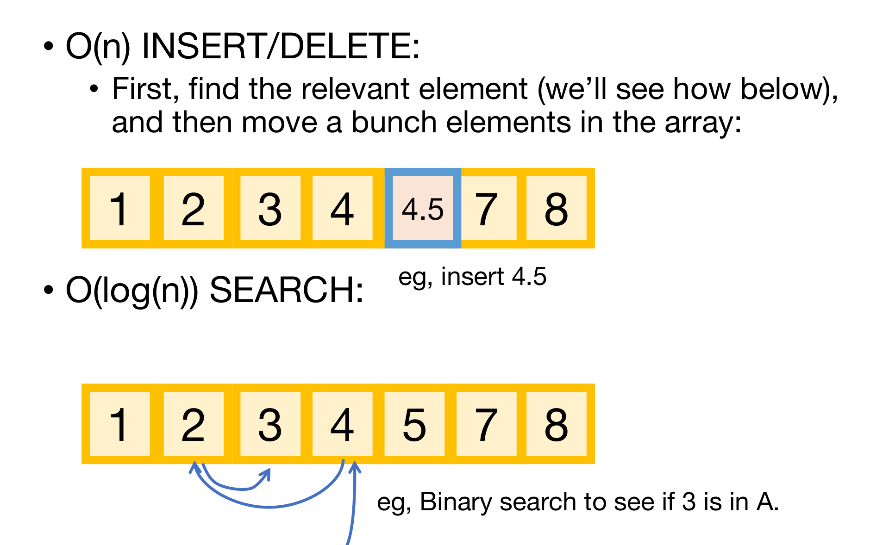
1, 2, 3, 4, 5, 7, 8에서 삽입과 탐색의 비용이 왜 다른지를 한 장에 보인 그림입니다. 위쪽은 삽입의 예(eg, insert 4.5)로, 노란 칸들 사이에 파란 테두리의 분홍 칸 4.5가 원래 5가 있던 자리에 끼워 넣어져 있습니다. 이 자리를 만들려면 5, 7, 8을 모두 한 칸씩 오른쪽으로 밀어야 하고, 최악의 경우(맨 앞에 넣는 경우) 배열 전체를 밀어야 하므로 삽입은 \(O(n)\)입니다. 삭제도 빈칸을 메우느라 같은 만큼 당겨야 하므로 \(O(n)\)입니다. 아래쪽은 3이 배열에 있는지 이진 탐색으로 확인하는 예로, 아래에서 올라오는 파란 화살표가 가운데 원소 4를 먼저 가리키고, 거기서 2로, 다시 3으로 휘어 가는 화살표가 이어집니다. 한 번 비교할 때마다 남은 후보가 절반으로 줄기 때문에 비교 횟수는 \(O(\log n)\)입니다. 이 그림의 요점은 정렬 상태가 탐색을 빠르게 해 주지만, 바로 그 정렬 상태를 지키느라 삽입·삭제가 느려진다는 것입니다.2.2 연결 리스트 (Linked Lists)
이번에는 반드시 정렬되어 있지는 않은(not necessarily sorted) 연결 리스트입니다.
- 삽입은 \(O(1)\)입니다 — 맨 앞에 끼워 넣으면 됩니다.
- 탐색·삭제는 \(O(n)\)입니다 —
HEAD부터 포인터를 따라 하나씩 확인해야 하고, 찾은 뒤에야 포인터를 조작해 지울 수 있습니다.
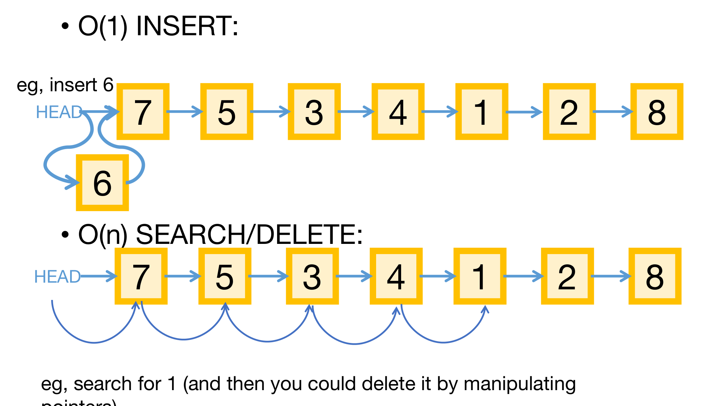
7 → 5 → 3 → 4 → 1 → 2 → 8에서의 두 연산을 보인 그림입니다. 노란 상자가 노드, 파란 화살표가 다음 노드를 가리키는 포인터, 왼쪽의 파란 글씨 HEAD가 리스트의 시작을 가리키는 포인터입니다. 위쪽은 6을 삽입하는 예(eg, insert 6)로, 새 노드 6을 아래에 만들고 HEAD의 화살표를 6으로, 6의 화살표를 원래의 첫 노드 7로 돌려놓는 휘어진 화살표 두 개만으로 삽입이 끝납니다. 리스트가 아무리 길어도 바꾸는 포인터는 두 개뿐이므로 \(O(1)\)입니다. 아래쪽은 1을 찾는 예로, HEAD에서 출발한 파란 곡선 화살표가 7 → 5 → 3 → 4 → 1로 한 칸씩 건너뛰어 다섯 번 만에 1에 도달합니다. 연결 리스트에는 가운데로 곧장 뛰어갈 방법이 없으므로 최악의 경우 \(n\)개를 모두 봐야 하고(탐색 \(O(n)\)), 삭제도 먼저 찾아야 포인터를 고쳐 지울 수 있으므로 \(O(n)\)입니다. 맨 아래 설명 문장은 원본 슬라이드에서도 화면 밖으로 잘려 있습니다.2.3 이진 탐색 트리의 동기 (Motivation for Binary Search Trees)
두 자료구조의 비용을 한 표에 모으면 다음과 같습니다. 슬라이드는 여기에 오늘의 주인공인 (균형 잡힌) 이진 탐색 트리의 열을 미리 채워 두고, 노란 머리칸 위에 붉은 글씨로 TODAY!라고 적어 두었습니다.
| 연산 | 정렬된 배열 | 연결 리스트 | (균형 잡힌) 이진 탐색 트리 |
|---|---|---|---|
| 탐색 (Search) | \(O(\log n)\) ☺ | \(O(n)\) ☹ | \(O(\log n)\) ☺ |
| 삭제 (Delete) | \(O(n)\) ☹ | \(O(n)\) ☹ | \(O(\log n)\) ☺ |
| 삽입 (Insert) | \(O(n)\) ☹ | \(O(1)\) ☺ | \(O(\log n)\) ☺ |
두 자료구조가 느린 이유는 서로 반대쪽에 있습니다.
- 정렬된 배열은 원소들의 순서를 쥐고 있어서 탐색이 빠르지만, 원소들이 메모리에 빈틈없이 붙어 있어서 하나를 넣거나 빼면 나머지를 밀고 당겨야 합니다.
- 연결 리스트는 원소들을 포인터로 이어 붙여서 구조를 바꾸기는 싸지만, 순서 정보가 없고 포인터를 따라 한 칸씩밖에 못 가서 탐색이 느립니다.
그렇다면 순서 정보를 쥐고 있으면서도 포인터로 이어 붙인 구조를 만들 수 있을까요? 그것이 이진 탐색 트리입니다. 다만 표의 마지막 열에 “(균형 잡힌)”이라는 단서가 붙어 있다는 점을 기억해 두어야 합니다. 이 단서가 강의 후반부 전체의 주제입니다.
3. 이진 탐색 트리 (Binary Search Trees)
3.1 이진 트리 용어 (Binary Tree Terminology)
먼저 용어를 정리합니다. 슬라이드는 한 가지 가정을 분명히 해 둡니다 — 오늘은 모든 키가 서로 다르다고 가정합니다(For today all keys are distinct).
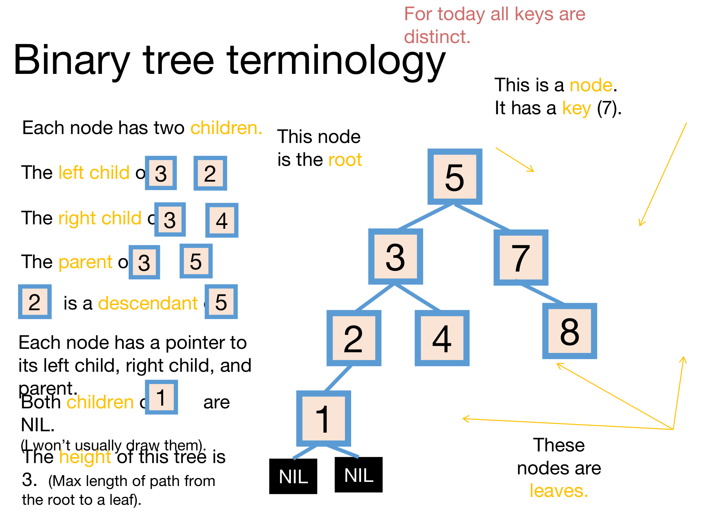
5 아래에 3과 7, 3 아래에 2와 4, 7 아래에 8, 2 아래에 1이 달린 모양이며, 파란 테두리 상자가 노드이고 상자 안의 숫자가 키입니다. 맨 위 분홍 글씨는 오늘은 모든 키가 서로 다르다는 가정을 밝히고, 노란 글씨로 강조된 단어들이 용어입니다 — This node is the root(뿌리 5), This is a node. It has a key (7).(노드와 키), 오른쪽 아래 These nodes are leaves.(잎). 왼쪽 열의 문장들이 관계 용어를 예로 정의합니다: 3의 왼쪽 자식은 2, 오른쪽 자식은 4, 부모는 5이고, 2는 5의 후손입니다. 각 노드는 왼쪽 자식·오른쪽 자식·부모를 가리키는 포인터를 가지며, 1의 두 자식처럼 비어 있는 자리는 검은 상자 NIL로 표시합니다 — 다만 앞으로는 보통 그리지 않는다고 덧붙입니다. 마지막 문장은 높이를 정의합니다: 이 트리의 높이는 3이며, 이는 뿌리에서 잎까지 가는 가장 긴 경로의 길이, 곧 5 → 3 → 2 → 1의 간선 수입니다. 원본 슬라이드에서 왼쪽 아래 문장 몇 개가 서로 겹쳐 인쇄되어 있고, 노란 화살표들도 가리키는 노드와 조금 어긋나 있습니다.그림의 용어를 표로 정리하면 다음과 같습니다.
| 용어 | 뜻 | 그림에서의 예 |
|---|---|---|
| 노드(node), 키(key) | 트리에 저장되는 객체와 그 값 | 키가 7인 노드 |
| 뿌리(root) | 부모가 없는 맨 위 노드 | 5 |
| 자식(child) | 각 노드는 왼쪽·오른쪽 두 자식을 가짐 | 3의 왼쪽 자식 2, 오른쪽 자식 4 |
| 부모(parent) | 자식 쪽에서 본 바로 위 노드 | 3의 부모 5 |
| 후손(descendant) | 자식, 자식의 자식, … 으로 내려가 닿는 모든 노드 | 2는 5의 후손 |
| NIL | 비어 있는 자식 자리 | 1의 두 자식 |
| 잎(leaf) | 두 자식이 모두 NIL인 노드 | 1, 4, 8 |
| 높이(height) | 뿌리에서 잎까지 가는 가장 긴 경로의 길이 | 3 (5 → 3 → 2 → 1) |
- 각 노드는 왼쪽 자식, 오른쪽 자식, 부모를 가리키는 포인터를 가집니다. 연결 리스트의 “다음” 포인터 하나가 세 개로 늘어난 셈이며, 이 포인터들 덕분에 §3.8 이후의 삽입·삭제와 §4의 회전이 원소를 밀고 당기지 않고 포인터 몇 개만 바꾸는 일로 끝납니다.
3.2 이진 탐색 트리의 정의 (Binary Search Trees)
이진 트리에 순서 정보를 심은 것이 이진 탐색 트리입니다.
이진 탐색 트리(BST)는 다음을 만족하는 이진 트리입니다.
- 어떤 노드의 모든 왼쪽 후손은 그 노드보다 작은 키를 가집니다.
- 어떤 노드의 모든 오른쪽 후손은 그 노드보다 큰 키를 가집니다.
여기서 “왼쪽 후손”은 왼쪽 자식을 뿌리로 하는 서브트리(subtree)에 속한 모든 노드를 뜻합니다.
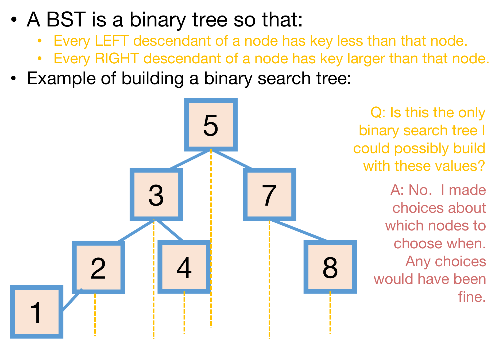
1, 2, 3, 4, 5, 7, 8로 이진 탐색 트리를 하나 지어 본 예입니다. 위쪽 두 노란 항목이 정의이고(모든 왼쪽 후손은 더 작고, 모든 오른쪽 후손은 더 크다), 아래 트리는 뿌리 5의 왼쪽에 3(그 아래 2와 4, 2 아래 1), 오른쪽에 7(그 아래 8)을 둔 모양입니다. 노드마다 아래로 내려 그은 노란 점선은 그 노드의 가로 위치를 바닥까지 떨어뜨린 것으로, 점선들을 왼쪽부터 읽으면 2, 3, 4, 5, 7, 8, 맨 왼쪽의 1까지 포함하면 정렬된 순서 그대로입니다. 노드들을 바닥으로 수직으로 떨어뜨리면 정렬된 배열이 된다는 뜻이며, 이 관찰이 §3.5의 중위 순회로 이어집니다. 오른쪽 노란 질문은 이 값들로 만들 수 있는 BST가 이것 하나뿐인가를 묻고, 분홍 답이 아니다라고 말합니다 — 어느 노드를 언제 고를지 선택을 했을 뿐이며, 다른 선택을 했어도 괜찮았다는 것입니다. 같은 키 집합이라도 모양이 다른 BST가 여럿 있다는 이 사실이, 나중에 모양을 바꿔도 여전히 BST인 트리를 찾는 §4의 출발점이 됩니다.3.3 여담: 어디서 본 모양입니다 (Aside: This Should Look Familiar)
BST를 짓는 과정은 어딘가 익숙합니다. 슬라이드의 표현으로는 “QuickSort를 좀 닮았습니다(kinda like QuickSort).”
- BST에서 뿌리를 고르는 것은 QuickSort에서 피벗을 고르는 것에 해당합니다.
- 뿌리보다 작은 키는 전부 왼쪽 서브트리로, 큰 키는 전부 오른쪽 서브트리로 가는데, 이것은
PARTITION이 피벗보다 작은 원소와 큰 원소를 양쪽으로 가르는 것과 같습니다. - 그다음 양쪽에서 같은 일을 재귀적으로 반복합니다 — 왼쪽 서브트리의 뿌리가 왼쪽 부분 배열의 피벗 역할을 하는 식입니다.
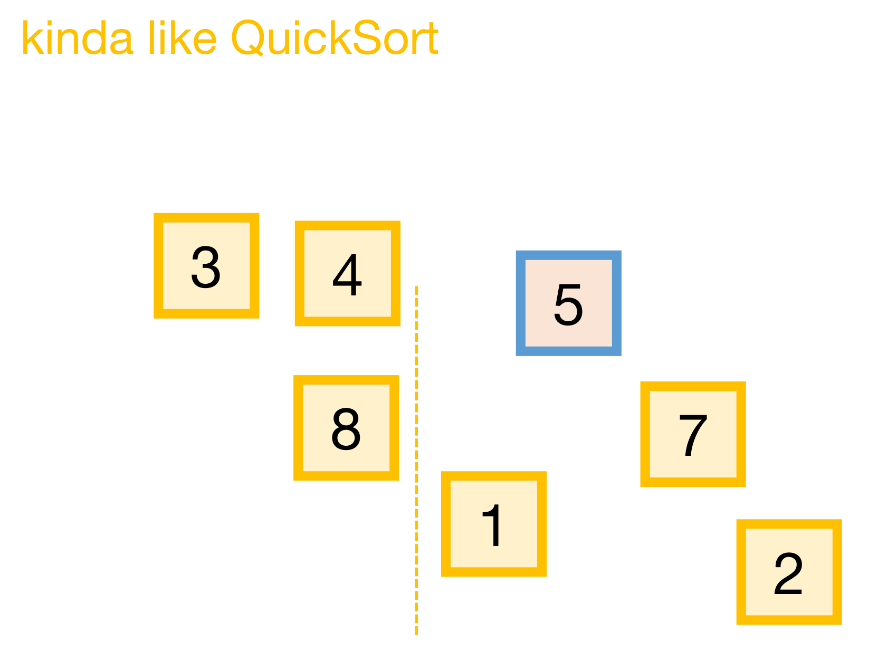
kinda like QuickSort라고 적고 있고, 가운데 파란 테두리의 분홍 상자 5가 피벗 — BST로 치면 뿌리 — 로 뽑힌 원소입니다. 노란 테두리 상자 3, 4, 8, 1, 7, 2는 아직 자리를 찾지 못한 나머지 원소들이며, 세로 노란 점선은 앞 그림에서 5 아래로 그었던 것과 같은 위치의 선으로 5보다 작은 쪽과 큰 쪽을 가르는 경계입니다. 지금은 8이 선의 왼쪽에, 1과 2가 오른쪽에 흩어져 있어 아직 분할되기 전의 모습이며, PDF에는 이 한 장면만 실려 있습니다. QuickSort의 PARTITION이 이 원소들을 점선 양쪽으로 가르듯, BST에서는 5보다 작은 1, 2, 3, 4가 왼쪽 서브트리로, 큰 7, 8이 오른쪽 서브트리로 가고, 양쪽에서 같은 일이 재귀적으로 반복됩니다.앞 절의 질문 “이 BST가 유일한가”에 대한 답도 이 비유로 설명됩니다. QuickSort에서 피벗을 무엇으로 고르느냐에 따라 재귀의 모양이 달라지듯, 뿌리를 무엇으로 고르느냐에 따라 BST의 모양이 달라집니다.
3.4 어느 쪽이 BST일까요 (Which of These Is a BST?)
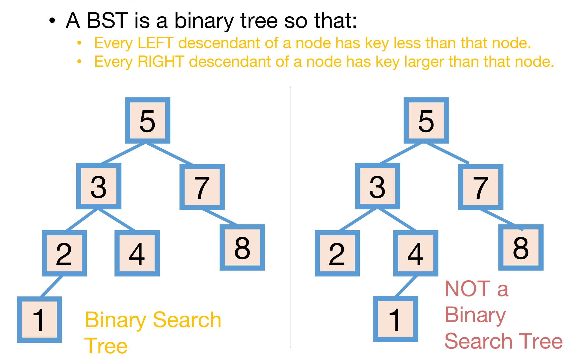
5 아래 3과 7, 3 아래 2와 4, 2 아래 1, 7 아래 8이 달린 것으로, 노란 글씨대로 이진 탐색 트리입니다. 오른쪽 트리는 1이 2가 아니라 4의 왼쪽 자식으로 옮겨 간 것 하나만 다른데, 붉은 글씨대로 이진 탐색 트리가 아닙니다. 1은 4보다 작으니 4의 왼쪽에 있는 것은 괜찮고, 5보다 작으니 5의 왼쪽 서브트리에 있는 것도 괜찮지만, 4가 3의 오른쪽 서브트리에 속하므로 1도 3의 오른쪽 후손이 되는데 1 < 3이어서 정의를 어깁니다. 두 트리를 나란히 놓은 이유가 바로 이 차이를 드러내는 데 있습니다 — 부모와 자식만 비교해서는 BST인지 판정할 수 없습니다.오른쪽 트리의 부모–자식 쌍을 하나씩 확인하면 모두 통과합니다 — 3 < 5, 7 > 5, 2 < 3, 4 > 3, 1 < 4, 8 > 7. 그런데도 BST가 아닌 이유는 정의가 자식이 아니라 후손 전체에 대한 조건이기 때문입니다.
한 노드의 키는 모든 조상이 부과하는 상한과 하한을 동시에 만족해야 합니다. 1은 3의 오른쪽에 있으므로 3보다 커야 하고, 5의 왼쪽에 있으므로 5보다 작아야 합니다. 다음 절의 중위 순회로 확인하면 오른쪽 트리는 2, 3, 1, 4, 5, 7, 8을 출력해, 정렬이 깨진다는 것이 곧바로 드러납니다.
3.5 여담: BST의 중위 순회 (Aside: In-Order Traversal of BSTs)
§3.2의 그림에서 노드들을 바닥으로 떨어뜨리면 정렬된 순서가 나왔습니다. 이 관찰을 알고리즘으로 바꾼 것이 중위 순회(in-order traversal)이며, 목표는 모든 원소를 정렬된 순서로 출력하는 것입니다.
inOrderTraversal(x):
if x != NIL:
inOrderTraversal( x.left ) # x보다 작은 키들을 먼저 모두 출력
print( x.key ) # 그다음 x 자신
inOrderTraversal( x.right ) # 마지막으로 x보다 큰 키들왼쪽 서브트리 → 자기 자신 → 오른쪽 서브트리 순으로, 자기 자신을 가운데에 출력하기 때문에 “중위”라는 이름이 붙습니다. 슬라이드는 이 재귀를 뿌리 5 아래 3과 7, 3 아래 2와 4가 달린 트리에 대해 열세 장의 애니메이션으로 따라갑니다. 노란 삼각형 마커가 지금 실행 중인 호출의 위치입니다.
| 단계 | 마커 위치 | 일어나는 일 | 지금까지의 출력 |
|---|---|---|---|
| 1 | 5 |
inOrderTraversal(5) 시작 → 먼저 왼쪽으로 |
|
| 2 | 3 |
inOrderTraversal(3) 시작 → 다시 왼쪽으로 |
|
| 3 | 2 |
inOrderTraversal(2) 시작 → 두 자식이 NIL임이 드러남 |
|
| 4 | 2의 왼쪽 NIL |
x == NIL이므로 아무것도 하지 않고 반환 |
|
| 5 | 2 |
print(2) |
2 |
| 6 | 2의 오른쪽 NIL |
반환 | 2 |
| 7 | 2 |
2에 대한 호출 종료 |
2 |
| 8 | 3 |
print(3) 후 오른쪽으로 |
2 3 |
| 9 | 4 |
print(4) |
2 3 4 |
| 10 | 3 |
3에 대한 호출 종료 |
2 3 4 |
| 11 | 5 |
print(5) 후 오른쪽으로 |
2 3 4 5 |
| 12 | 7 |
print(7) |
2 3 4 5 7 |
| 13 | 5 |
전체 종료 — 정렬됨! | 2 3 4 5 7 |
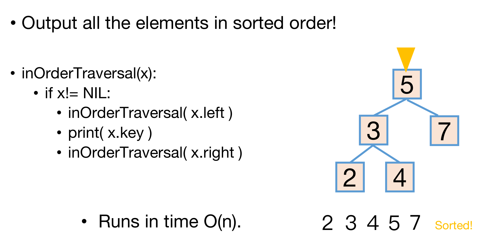
inOrderTraversal(x)이고, 오른쪽 트리는 뿌리 5 아래 3과 7, 3 아래 2와 4가 달린 BST입니다. 노드 위의 노란 삼각형은 지금 실행 중인 재귀 호출의 위치를 가리키는 마커로, 애니메이션 동안 5 → 3 → 2 → 2의 두 NIL → 3 → 4 → 3 → 5 → 7을 차례로 거친 뒤 다시 뿌리 5로 돌아와 있습니다. 아래 검은 숫자 2 3 4 5 7이 print(x.key)가 찍은 출력이고, 그 옆의 노란 글씨 Sorted!가 이것이 정렬된 순서임을, 왼쪽 아래 문장이 이 순회가 \(O(n)\) 시간에 끝남을 말해 줍니다. 트리 안에서 키들은 여러 층에 흩어져 있지만 출력은 정렬되어 나옵니다 — BST의 정렬 정보는 층이 아니라 왼쪽·오른쪽이라는 관계에 담겨 있다는 것이 이 그림의 요점입니다.슬라이드는 결과만 적었으므로 두 가지 사실을 짧게 확인해 두겠습니다.
① 왜 정렬되어 나오는가. 서브트리의 크기에 대한 귀납법입니다.
- 비어 있는 트리(NIL)는 아무것도 출력하지 않으므로 자명하게 참입니다.
- 노드 \(x\)에서, 귀납 가정에 의해
x.left의 순회는 왼쪽 서브트리의 키들을 정렬된 순서로,x.right의 순회는 오른쪽 서브트리의 키들을 정렬된 순서로 출력합니다. - BST 성질에 의해 (왼쪽 서브트리의 모든 키) \(<\)
x.key\(<\) (오른쪽 서브트리의 모든 키)이므로, 이 셋을 이어 붙인 출력도 정렬되어 있습니다.
② 왜 \(O(n)\)인가. 각 호출은 재귀 호출을 제외하면 \(O(1)\) 일을 합니다. NIL이 아닌 노드 \(n\)개마다 호출이 한 번씩 일어나고, 그 노드들의 자식 자리 \(2n\)개 가운데 \(n-1\)개는 다른 노드가 차지하므로 NIL 자리는 \(n+1\)개입니다. 따라서 전체 호출 수는 \(n + (n+1) = 2n + 1\)이고, 실행 시간은 \(O(n)\)입니다.
중위 순회는 비교를 한 번도 하지 않고 \(O(n)\)에 정렬된 출력을 내놓습니다. 그렇다면 원소 \(n\)개로 BST를 짓는 일 자체는 비교만으로 \(o(n\log n)\)에 할 수 없습니다. 그것이 가능하다면 “BST 짓기 + 중위 순회”가 \(o(n\log n)\)짜리 비교 기반 정렬이 되어, 6강의 \(\Omega(n\log n)\) 하한과 모순되기 때문입니다.
정렬 정보는 공짜로 생기지 않습니다. BST는 그 정보를 짓는 동안 비교로 모아 트리의 모양에 저장해 둔 것이고, 중위 순회는 저장된 것을 꺼내 읽을 뿐입니다.
3.6 목표로 돌아가서 (Back to the Goal)
여담을 마치고 원래 목표로 돌아옵니다.
목표: 빠른 SEARCH / INSERT / DELETE — 이것들을 할 수 있을까요?
3.7 탐색 (SEARCH in a Binary Search Tree)
슬라이드는 SEARCH를 형식적으로 정의하는 대신 예로 정의합니다(definition by example).
- 4를 찾는 경우: 뿌리
5에서 시작합니다 → \(4 < 5\)이므로 왼쪽3으로 갑니다 → \(4 > 3\)이므로 오른쪽4로 갑니다 → 찾았습니다. - 4.5를 찾는 경우: 같은 경로로
4까지 온 뒤 \(4.5 > 4\)이므로 오른쪽으로 가려 하지만,4의 오른쪽 자식은 NIL입니다. 트리를 벗어납니다.- 슬라이드는 이때
4를 반환하는 것이 편리하다고 말합니다. 곧 트리를 벗어나기 직전의 마지막 노드를 반환합니다. - 왜 편리한지는 바로 다음 절 INSERT에서 드러납니다.
- 슬라이드는 이때
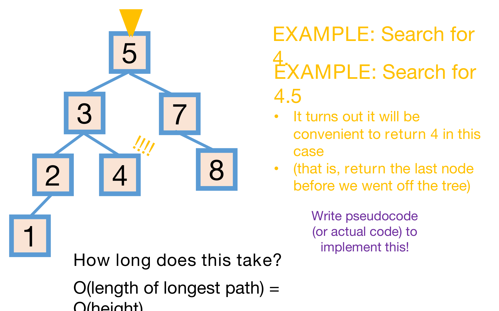
5 아래 3과 7, 3 아래 2와 4, 2 아래 1, 7 아래 8이 달린 BST이고, 뿌리 위의 노란 삼각형은 탐색이 뿌리에서 시작함을 나타냅니다. 오른쪽 노란 글씨는 두 개의 예 — 4 찾기와 4.5 찾기 — 를 적고 있습니다(원본 슬라이드에서 두 제목이 겹쳐 인쇄되어 있습니다). 4 옆의 노란 느낌표 !!!!는 4.5를 찾던 탐색이 4에서 트리를 벗어나는 순간을 표시하며, 노란 설명대로 이때는 4를 — 곧 트리를 벗어나기 직전의 마지막 노드를 — 반환하는 것이 편리합니다. 보라색 글씨는 이것을 의사코드나 실제 코드로 구현해 보라는 연습 과제이고, 아래 검은 글씨는 소요 시간이 \(O(\text{가장 긴 경로의 길이}) = O(\text{height})\)라는 답을 줍니다(마지막 줄은 원본에서도 화면 아래로 잘려 있습니다). 탐색은 뿌리에서 한 경로만 따라 내려가므로 트리 전체의 크기가 아니라 높이가 비용을 결정한다는 것이 이 그림의 요점입니다.슬라이드가 연습으로 남긴 의사코드를 말로 풀면 다음과 같습니다.
- 현재 노드 \(x\)를 뿌리로 둡니다.
key == x.key이면 \(x\)를 반환합니다.key < x.key이면 왼쪽 자식,key > x.key이면 오른쪽 자식이 다음 행선지입니다.- 그 행선지가 NIL이면 \(x\)를 반환하고(트리를 벗어나기 직전의 마지막 노드), 아니면 그리로 내려가 2로 돌아갑니다.
얼마나 걸리는가? 비교 한 번마다 한 층씩 내려가므로, 걸리는 시간은 탐색이 지나가는 경로의 길이에 비례하고 최악의 경우 가장 긴 경로의 길이, 곧 높이입니다.
\[\text{SEARCH의 시간} \;=\; O(\text{가장 긴 경로의 길이}) \;=\; O(\text{height})\]
3.8 삽입 (INSERT in a Binary Search Tree)
예로 4.5를 삽입해 보겠습니다. 슬라이드의 의사코드는 다음과 같습니다.
INSERT(key):
x = SEARCH(key) # key가 있으면 그 노드, 없으면 트리를 벗어나기 직전의 노드
if key > x.key:
Make a new node with the correct key, and put it as the right child of x.
if key < x.key:
Make a new node with the correct key, and put it as the left child of x.
if x.key == key:
return # 이미 있는 키 — 오늘은 모든 키가 서로 다르다고 가정SEARCH(4.5)는 4를 반환하고, \(4.5 > 4\)이므로 새 노드 4.5를 4의 오른쪽 자식으로 붙입니다.
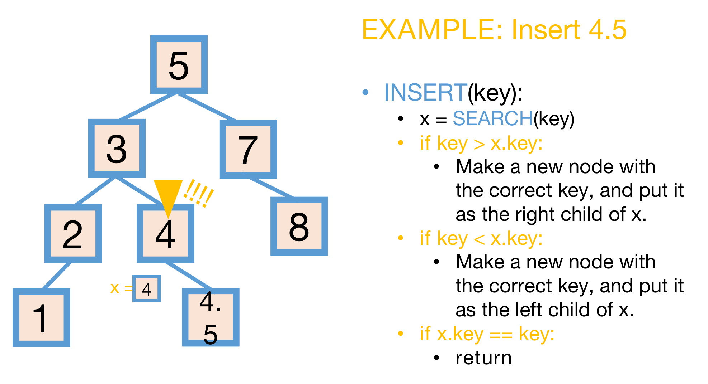
4.5를 삽입하는 예입니다. 왼쪽 트리는 앞의 탐색 예와 같은 BST이고, 노란 삼각형과 느낌표 !!!!가 4를 가리키며 SEARCH(4.5)가 4에서 트리를 벗어났음을 나타냅니다. 그 아래 작은 노란 글씨 x = 4는 SEARCH의 반환값을 기록한 것이고, 4의 오른쪽 자식으로 새로 붙은 4.5 노드(원본에서 4.와 5가 두 줄로 줄바꿈되어 있습니다)가 삽입의 결과입니다. 오른쪽 의사코드는 파란 INSERT(key)가 먼저 x = SEARCH(key)를 부르고, 노란 조건 세 줄 — key > x.key, key < x.key, x.key == key — 에 따라 새 노드를 x의 오른쪽 자식이나 왼쪽 자식으로 달거나, 이미 있는 키이면 그냥 반환하는 구조를 보여 줍니다. 새 노드를 다는 작업 자체는 포인터 몇 개를 바꾸는 \(O(1)\)이므로, 삽입의 비용은 앞선 SEARCH, 곧 \(O(\text{height})\)가 전부입니다.§3.7에서 SEARCH가 “마지막 노드”를 반환하도록 정한 이유가 여기서 드러납니다.
- SEARCH가 \(x\)를 반환했다는 것은, 키가 가야 할 쪽의 \(x\)의 자식 자리가 NIL이라 거기서 트리를 벗어났다는 뜻입니다. 그러니 그 자리는 비어 있고, 새 노드를 그대로 달 수 있습니다.
- 그 자리는 BST 성질에도 맞습니다. 뿌리에서 \(x\)까지 내려오는 동안 매 비교가 키를 올바른 쪽으로 보냈으므로, 새 노드는 경로 위의 모든 조상에 대해 이미 올바른 쪽에 놓여 있습니다.
3.9 삭제 (DELETE in a Binary Search Tree)
예로 2를 삭제해 보겠습니다. 의사코드의 뼈대는 삽입과 같지만, 핵심 한 줄이 비어 있습니다.
DELETE(key):
x = SEARCH(key)
if x.key == key:
....delete x.... # 이 한 줄이 경우에 따라 달라진다 (아래 세 경우)슬라이드는 이 부분이 “조금 더 복잡하다”며 뒤에 실린 그림들을 보라고 안내합니다. 지울 노드를 3이라 할 때 경우는 셋입니다. 참고로 앞의 예 “2 삭제”에서 2는 자식이 1 하나뿐이므로 아래의 경우 2에 해당합니다.
- 경우 1:
3이 잎이면, 그냥 지웁니다. - 경우 2:
3의 자식이 하나뿐이면, 그 자식을 (그 아래 서브트리째)3의 자리로 끌어올립니다. - 경우 3:
3의 자식이 둘이면,3을 그 직후 원소(immediate successor) —3다음으로 큰 키 — 로 바꿔 넣습니다.
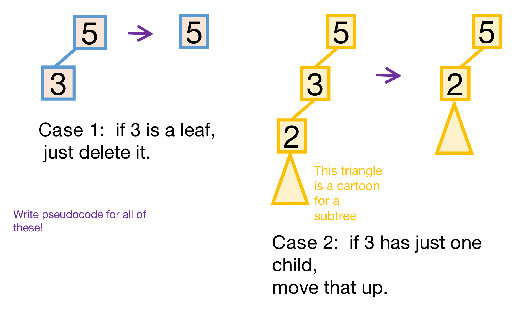
3을 지우는 예로 보인 그림입니다. 왼쪽(경우 1)은 5의 왼쪽 자식 3이 잎인 경우로, 보라색 화살표 오른쪽처럼 3을 그냥 떼어 내면 5만 남습니다. 오른쪽(경우 2)은 3이 자식을 하나(2)만 가진 경우로, 2 아래의 노란 삼각형은 임의의 서브트리를 나타내는 약식 기호입니다(노란 설명 This triangle is a cartoon for a subtree). 이때는 3을 지우고 그 자리에 2를 서브트리째 끌어올려 5의 왼쪽 자식으로 붙입니다. 이것이 BST 성질을 깨지 않는 이유는, 2의 서브트리가 원래부터 3의 서브트리 안에 있었으므로 3의 조상들(여기서는 5)이 부과하던 조건을 이미 전부 만족하고 있기 때문입니다. 왼쪽 아래 보라색 글씨는 이 경우들 모두를 의사코드로 적어 보라는 연습 과제입니다.경우 3은 조금 더 생각할 거리가 있습니다. 자식이 둘인 노드를 그냥 빼면 두 서브트리를 한 자리에 붙일 수 없으므로, 대신 3의 자리를 채울 다른 키를 데려옵니다.
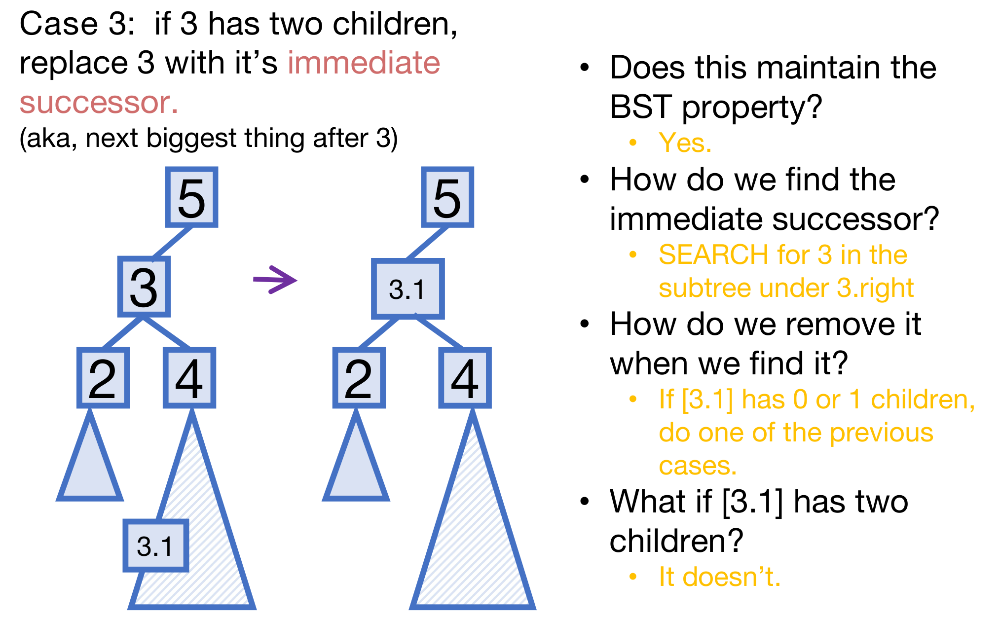
3이 자식을 둘(2와 4) 가진 경우입니다. 왼쪽 위 글씨가 규칙을 말합니다 — 3을 그 직후 원소(immediate successor), 곧 3 다음으로 큰 키로 바꿔 넣는다. 왼쪽 트리에서 2와 4 아래의 파란 삼각형은 서브트리이고, 4 아래의 커다란 빗금 삼각형 맨 왼쪽 아래에 작은 상자 3.1이 들어 있습니다 — 3의 오른쪽 서브트리에서 가장 작은 키이므로, 트리 전체에서 3 바로 다음으로 큰 키입니다. 보라색 화살표 오른쪽 트리는 그 3.1을 3의 자리로 옮긴 결과로, 빗금 삼각형에서는 3.1이 빠졌습니다. 오른쪽 네 개의 질문과 노란 답이 이 절차의 정당성을 짚습니다: BST 성질이 유지되는가(그렇다), 직후 원소를 어떻게 찾는가(3.right 아래 서브트리에서 3을 SEARCH한다), 찾은 뒤 어떻게 떼어 내는가(3.1의 자식이 0개나 1개이면 앞의 두 경우 중 하나를 적용한다), 3.1의 자식이 둘이면 어떻게 하는가(그런 일은 없다).슬라이드의 네 질문에 붙은 짧은 답을 하나씩 풀어 보겠습니다.
- BST 성질이 유지되는가? — 그렇습니다.
3.1은3보다 큰 키 중 가장 작은 것입니다. 왼쪽 서브트리의 키들은 모두 \(3\)보다 작으므로 \(3.1\)보다도 작습니다.- 오른쪽 서브트리에 남은 키들은 모두
3.1보다 큽니다.3.1이 그중 최솟값이었기 때문입니다. 3의 조상들이 부과하던 조건도 그대로 성립합니다.3.1은 원래3의 서브트리 안에 있었으므로 그 조건을 이미 만족하고 있었습니다.
- 직후 원소는 어떻게 찾는가? —
3.right아래 서브트리에서 3을 SEARCH합니다.- 이 서브트리의 키는 전부 \(3\)보다 크므로, 3을 찾는 탐색은 매번 왼쪽으로만 내려가다가 더 갈 곳이 없는 노드에서 트리를 벗어납니다.
- §3.7의 약속대로 SEARCH는 그 마지막 노드, 곧 오른쪽 서브트리의 최솟값을 반환합니다. 이것이 정확히 직후 원소입니다. “트리를 벗어나기 직전의 노드를 반환한다”는 설계가 여기서도 쓰입니다.
- 찾은 뒤 어떻게 떼어 내는가? —
3.1의 자식이 0개나 1개이면 경우 1이나 경우 2를 적용합니다. 3.1의 자식이 둘이면? — 그런 일은 없습니다.3.1에게 왼쪽 자식이 있다면 그 자식은3.1보다 작으면서 여전히3의 오른쪽 서브트리 안에 있을 테니,3.1이 최솟값이라는 데 모순입니다. 따라서3.1은 왼쪽 자식이 없고, 자식은 많아야 하나(오른쪽)입니다.
3.10 이 연산들은 얼마나 걸리는가 (How Long Do These Operations Take?)
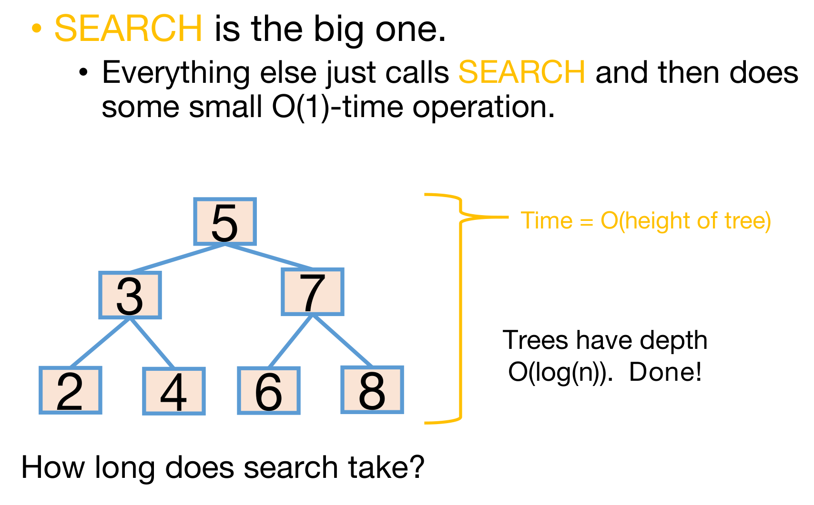
5 아래 3과 7, 그 아래 2, 4, 6, 8이 달린 완벽하게 균형 잡힌 BST이고, 오른쪽의 노란 중괄호가 트리의 위아래 전체를 묶으며 시간 = \(O(\text{트리의 높이})\)라고 적고 있습니다. 검은 글씨는 트리의 깊이가 \(O(\log n)\)이므로 “끝!”이라고 결론짓습니다. 하지만 아래 질문 “탐색은 얼마나 걸리는가?”가 암시하듯, 이 결론은 트리가 이 그림처럼 균형 잡혀 있을 때에만 성립하며, 바로 다음 그림이 그 전제를 무너뜨립니다.- SEARCH가 가장 큰 비용입니다.
- 나머지는 모두 SEARCH를 부른 뒤 작은 \(O(1)\) 작업을 할 뿐입니다. 경우 3의 삭제는 직후 원소를 찾느라 SEARCH를 한 번 더 부르지만, 그 역시 한 경로를 따라 내려가는 일이므로 \(O(\text{height})\)를 넘지 않습니다.
- 따라서 세 연산 모두 \(O(\text{height})\)입니다.
- 그림처럼 균형 잡힌 트리라면 깊이가 \(O(\log n)\)이므로 — “끝!”일 것 같습니다.
3.11 탐색이 \(O(n)\)까지 걸릴 수 있습니다 (Search Might Take Time O(n))
그런데 BST의 정의는 트리가 균형 잡혀 있기를 요구하지 않습니다.
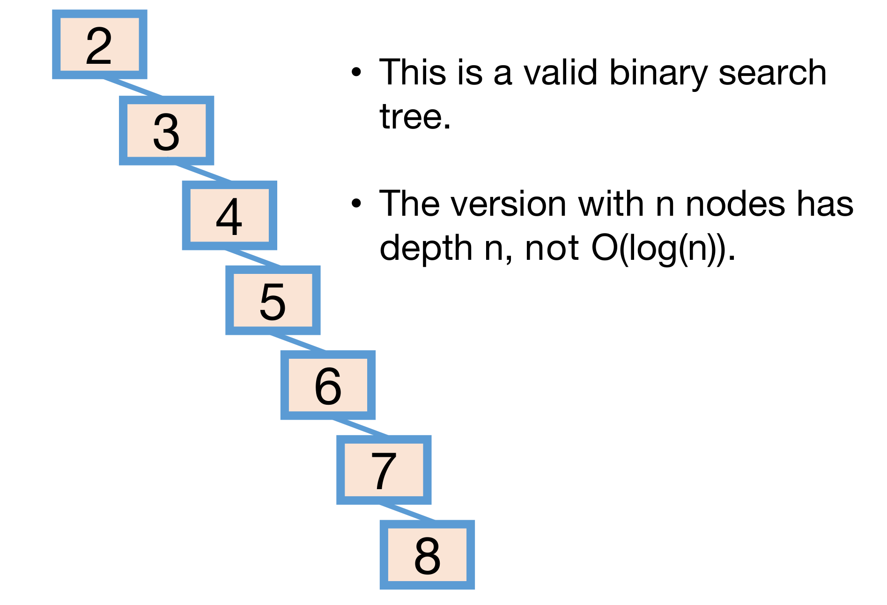
2, 3, 4, 5, 6, 7, 8이 모두 앞 노드의 오른쪽 자식으로 이어져, 트리가 오른쪽 아래로 뻗은 한 줄의 사슬이 되어 있습니다. 오른쪽 첫 항목대로 이것도 올바른 BST입니다 — 모든 노드의 오른쪽 후손이 그 노드보다 크고, 왼쪽 후손은 아예 없기 때문입니다. 둘째 항목이 문제를 말합니다 — 노드가 \(n\)개인 이런 트리는 깊이가 \(n\)이지 \(O(\log n)\)이 아닙니다. 이 트리에서 8을 찾으면 모든 노드를 거쳐야 하므로, 사실상 §2.2의 연결 리스트와 다를 바가 없습니다. 앞 그림의 균형 잡힌 트리와 똑같은 BST 정의를 만족하면서도 비용은 정반대라는 것이 요점입니다.- 이것도 올바른 이진 탐색 트리입니다.
- 노드가 \(n\)개인 이런 트리는 깊이가 \(n\)(간선 수로 세면 \(n-1\))이지, \(O(\log n)\)이 아닙니다.
이런 트리는 특별히 악의적인 상황에서만 생기는 것이 아닙니다. 빈 트리에 키를 2, 3, 4, …, 8처럼 오름차순으로 삽입하면, 새 키가 매번 기존의 모든 키보다 커서 맨 오른쪽 끝에 붙으므로 정확히 이 사슬이 만들어집니다. 이미 정렬된 데이터를 넣는 것은 현실에서 아주 흔한 일입니다.
3.12 어떻게 해야 할까 (What to Do?)
상황을 정리하면 이렇습니다.
- 목표: 빠른 SEARCH / INSERT / DELETE.
- 이 연산들은 모두 \(O(\text{height})\) 시간이 걸립니다.
- 그런데 높이가 클 수 있습니다!!! ☹
아이디어 0 (Idea 0)
- 트리가 얼마나 깊어지는지 계속 추적합니다.
- 너무 높아지면, 모든 것을 처음부터 다시 만듭니다.
- 그러면 적어도 \(\Omega(n)\)의 비용을 이따금 치러야 합니다….
슬라이드는 이것이 좋은 생각이 아닌 것으로 드러났다고 말하고, 보라색 주석으로 물음을 던집니다 — “최악의 경우 ’이따금’은 얼마나 자주일까요? 사실 꽤 자주입니다!”
이 물음에 대략적으로 답해 볼 수 있습니다. 높이가 \(c\log n\)을 넘으면 다시 짓는다고 하고(\(c > 1\)은 상수), 다시 지은 직후의 트리가 완벽히 균형 잡혀 높이가 약 \(\log n\)이라고 합시다. 이제 매번 현재 최댓값보다 큰 키를 넣으면 §3.11처럼 새 노드가 항상 맨 오른쪽 경로 끝에 붙으므로, 높이가 삽입마다 1씩 자랍니다. 그러면 약 \((c-1)\log n\)번의 삽입마다 \(\Omega(n)\)짜리 재구성이 일어나고, 삽입 하나에 돌아가는 평균 비용은
\[\frac{\Omega(n)}{(c-1)\log n} \;=\; \Omega\!\left(\frac{n}{\log n}\right)\]
이 되어 목표인 \(O(\log n)\)과는 거리가 멉니다. 트리를 통째로 갈아엎는 대신, 조금씩 고쳐 가며 균형을 지키는 방법이 필요합니다.
4. 자가 균형 이진 탐색 트리 (Self-Balancing Binary Search Trees)
34번째 슬라이드의 구획 표지와 함께 강의의 후반부가 시작됩니다. 목표는 연산을 하는 도중에 스스로 균형을 유지하는 BST입니다. 이를 위해 강의는 두 개의 아이디어를 차례로 쌓습니다 — 균형을 고치는 도구(회전)와, 무엇을 목표로 고칠지 정하는 기준(균형의 대리 지표)입니다.
4.1 아이디어 1: 회전 (Idea 1: Rotations)
BST 성질을 유지하면서 노드들을 옮긴다.
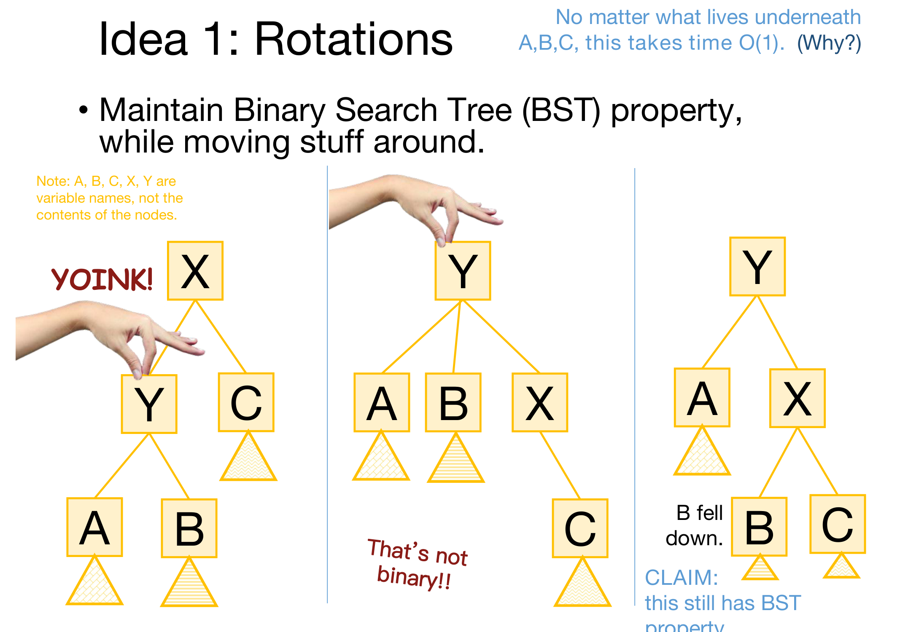
X, Y, A, B, C는 노드이고 그 아래 빗금 삼각형은 각 노드 아래에 매달린 서브트리이며, 왼쪽 위 작은 노란 주석대로 이 글자들은 노드의 내용이 아니라 변수 이름입니다. 왼쪽 장면: X의 왼쪽 자식이 Y이고, Y는 A와 B를, X는 오른쪽에 C를 달고 있습니다. 손이 Y를 집어 올립니다(붉은 글씨 YOINK!는 낚아채는 동작을 나타내는 감탄사입니다). 가운데 장면: Y가 위로 올라오면서 X가 끌려 내려와, Y 아래에 A, B, X 세 자식이 매달린 모양이 됩니다 — 붉은 글씨 그대로 이건 이진 트리가 아닙니다!! 오른쪽 장면: 그래서 B가 한 칸 떨어져(B fell down.) X의 왼쪽 자식이 되고, Y가 A와 X를, X가 B와 C를 두 자식으로 갖는 이진 트리가 완성됩니다. 파란 글씨 CLAIM은 이 결과도 여전히 BST 성질을 가진다고 주장하고(원본에서 마지막 줄이 화면 아래로 잘려 있습니다), 오른쪽 위 파란 글씨는 A, B, C 아래에 무엇이 있든 이 작업은 \(O(1)\) 시간이 걸린다고 말하며 그 이유를 묻습니다.회전 한 번은 다음과 같이 진행됩니다.
X의 왼쪽 자식Y를 집어 올립니다.- 그러면
Y가A,B,X세 자식을 갖게 되는데, 이것은 이진 트리가 아닙니다. - 그래서 가운데 자식
B를X의 (이제 비어 있는) 왼쪽 자리로 떨어뜨립니다.
슬라이드가 남긴 두 주장을 확인해 보겠습니다.
- 결과가 여전히 BST인가(CLAIM)? §3.5의 중위 순회로 보면 간단합니다. 회전 전 트리를 중위 순회하면
A, Y, B, X, C순서이고, 회전 후 트리도A, Y, B, X, C순서입니다. 키들의 좌우 순서가 전혀 바뀌지 않았으므로 BST 성질이 유지됩니다. 직접 확인해도 같습니다 —B의 키들은 원래Y의 오른쪽에 있었으니Y보다 크고,X의 왼쪽에 있었으니X보다 작습니다. 새 자리(Y의 오른쪽이자X의 왼쪽)가 요구하는 조건이 정확히 이것입니다. - 왜 \(O(1)\)인가(Why?)? 서브트리
A, B, C는 통째로 옮겨질 뿐 그 내부는 전혀 건드리지 않기 때문입니다. 바뀌는 것은 포인터 몇 개뿐입니다 —X의 왼쪽 자식(Y→B),B의 부모(Y→X),Y의 오른쪽 자식(B→X),X의 부모(원래 부모 →Y),Y의 부모(X→X의 원래 부모), 그리고X의 원래 부모가 가리키던 자식(X→Y). 서브트리가 얼마나 크든 이 여섯 개면 됩니다.
4.2 쓸모가 있어 보입니다 (This Seems Helpful)
회전은 트리의 모양을 바꾸면서도 BST 성질을 지키므로, 기울어진 트리를 펴는 데 쓸 수 있습니다.
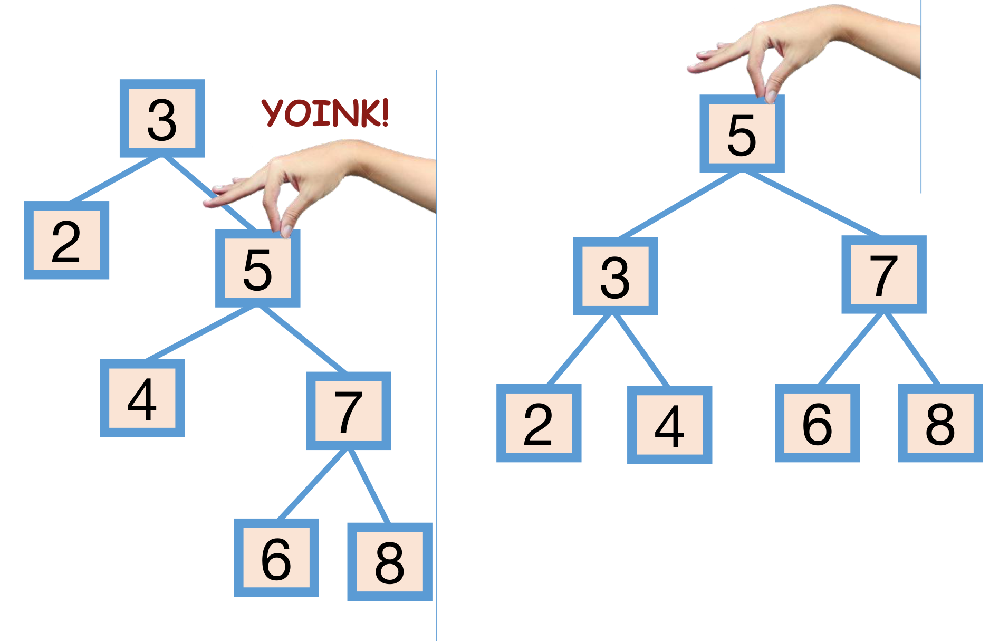
3의 왼쪽에 2, 오른쪽에 5가 있고, 5 아래 4와 7, 7 아래 6과 8이 달려 오른쪽으로 기울어 있습니다(높이 3). 손이 오른쪽 자식 5를 집어 올리면(YOINK!) 앞 그림의 회전을 좌우로 뒤집은 동작이 일어나, 오른쪽 트리처럼 5가 뿌리가 되고 3은 그 왼쪽 자식으로 내려가며, 원래 5의 왼쪽 자식이던 4가 3의 오른쪽 자식으로 떨어집니다. 결과는 5 아래 3과 7, 그 아래 2, 4, 6, 8이 달린 완벽한 균형 트리(높이 2)입니다. 두 트리를 중위 순회하면 모두 2, 3, 4, 5, 6, 7, 8이 나오므로, 같은 키 집합의 서로 다른 BST 사이를 회전 한 번으로 옮겨 다닐 수 있음을 볼 수 있습니다.§4.1의 기호로 쓰면 X = 3, Y = 5, A = 2, B = 4, C = 7(과 그 아래)이고, 좌우만 뒤집혀 있습니다. B = 4가 떨어지는 자리도 정확히 앞 그림과 대칭입니다.
4.3 전략은? (Strategy?)
도구가 생겼으니 전략을 세워 봅니다.
무언가 불균형해 보일 때마다, 다시 괜찮아질 때까지 회전한다.
슬라이드의 노란 주석은 이 전략이 “Lucky에게조차 꽤 모호하다”고 꼬집습니다(Lucky는 원작 Stanford 강의 슬라이드의 마스코트 캐릭터입니다). “불균형해 보인다”는 것이 무슨 뜻이고, “괜찮다”는 것은 또 무슨 뜻일까요? 언제 회전하고 언제 멈출지 정하는 기준이 없으면, 이 전략은 알고리즘이 되지 못합니다.
4.4 아이디어 2: 균형의 대리 지표 (Idea 2: Have Some Proxy for Balance)
- 완벽한 균형(perfect balance)을 유지하는 것은 너무 어렵습니다.
- 대신 균형의 대리 지표(proxy for balance)를 생각해 냅니다. 곧 다음 두 조건을 모두 만족하는 어떤 성질을 찾습니다.
- 트리가 그 성질을 만족하면, 그 트리는 꽤 균형 잡혀(pretty balanced) 있다.
- 그 성질은 회전을 써서 유지할 수 있다.
완벽한 균형이 왜 너무 어려운지는 짐작할 수 있습니다. 예를 들어 “뿌리는 언제나 중앙값”이어야 한다면, 가장 큰 키를 하나 넣을 때마다 중앙값이 바뀌어 트리 전체의 모양을 다시 짜야 할 수 있습니다. 그래서 목표를 조금 느슨하게 잡는 것입니다 — 높이가 \(\log n\)의 상수배 안에만 머물면 모든 연산이 \(O(\log n)\)이므로 충분합니다.
슬라이드는 이렇게 하는 방법이 실제로 여러 가지 있지만, 오늘은 그중 하나를 보겠다고 말합니다(예컨대 AVL 트리처럼 다른 대리 지표를 쓰는 자가 균형 트리들도 있습니다). 그 하나가 레드-블랙 트리입니다.
4.5 레드-블랙 트리 (Red-Black Trees)
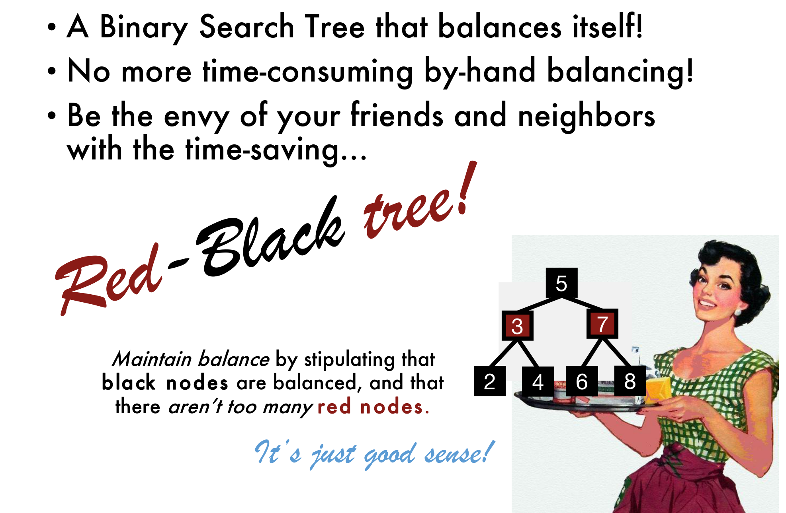
5와 맨 아래 2, 4, 6, 8은 검은 상자, 가운데 층의 3과 7은 붉은 상자입니다. 뿌리에서 맨 아래까지 어느 경로로 내려가도 검정 노드를 같은 수만큼 지나고 빨강은 연달아 나오지 않는다는 것이 그 두 줄 문장의 뜻이며, 정확한 형태가 다음 절의 규칙입니다. 맨 아래 파란 필기체는 “그저 상식이죠!”라는 광고 문구입니다.광고 문구를 걷어 내면 남는 핵심은 한 문장입니다 — 검정 노드들은 균형을 이루도록, 빨간 노드는 너무 많지 않도록 규정해서 균형을 유지한다. 모든 노드에 색을 하나씩 칠하고, 그 색에 대한 규칙을 대리 지표로 삼는 것입니다.
4.6 레드-블랙 트리의 규칙 (Red-Black Trees Obey the Following Rules)
레드-블랙 트리는 다음 규칙을 따르는 BST이며, 이 규칙들이 곧 균형의 대리 지표입니다.
- 모든 노드는 빨강 또는 검정으로 칠해져 있습니다.
- 뿌리 노드는 검정입니다.
- NIL 자식은 검정 노드로 칩니다.
- 빨간 노드의 자식은 검정 노드입니다.
- 모든 노드 \(x\)에 대해, \(x\)에서 NIL까지 가는 모든 경로는 같은 수의 검정 노드를 지납니다.
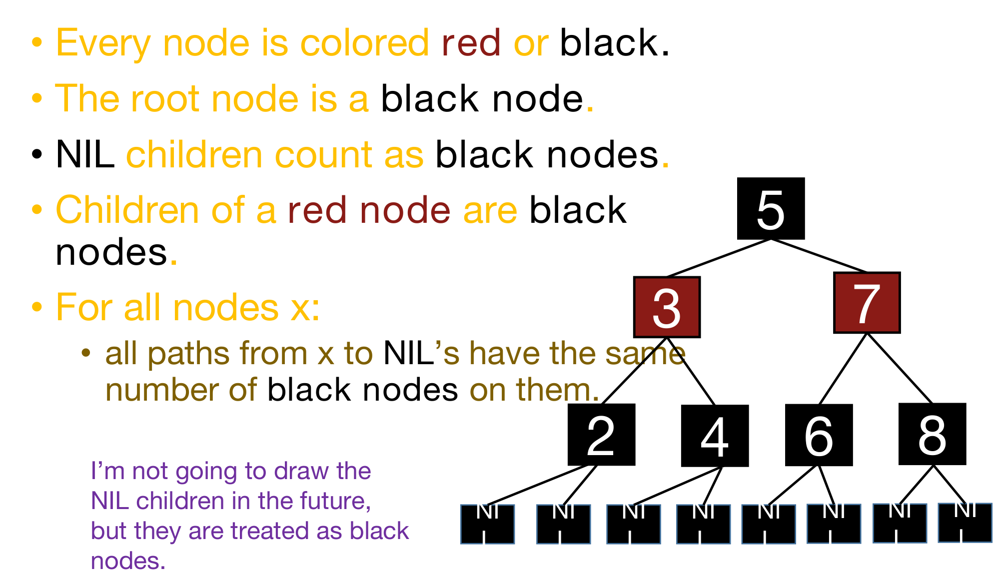
5(검정), 그 아래 3과 7(빨강), 맨 아래 2, 4, 6, 8(검정), 그리고 그 아래 여덟 개의 작은 NIL 상자(검정, 원본에서 NI와 L로 줄바꿈되어 있습니다)로 이루어져 있습니다. 규칙을 하나씩 확인할 수 있습니다 — 빨간 3과 7의 자식은 모두 검정이고, 뿌리에서 어느 NIL로 내려가도 뿌리를 빼면 검정 노드를 두 개(2, 4, 6, 8 중 하나와 NIL) 지납니다. 왼쪽 아래 보라색 글씨는 앞으로 NIL 자식은 그리지 않겠지만 여전히 검정 노드로 취급한다는 약속입니다.다섯 규칙의 역할은 같지 않습니다.
- 규칙 1–3은 장부 정리에 가깝습니다. 색이 무엇인지, 그리고 경계(뿌리와 NIL)를 어떻게 셀지 정합니다.
- 규칙 5가 “검정 노드들은 균형을 이룬다”의 정확한 형태입니다. 검정 노드만 세면 모든 경로가 똑같이 깁니다.
- 규칙 4가 “빨간 노드는 너무 많지 않다”의 정확한 형태입니다. 빨강은 연달아 올 수 없으므로, 어떤 경로에서든 빨강이 검정보다 많을 수 없습니다.
4.7 예시 (Examples(?))
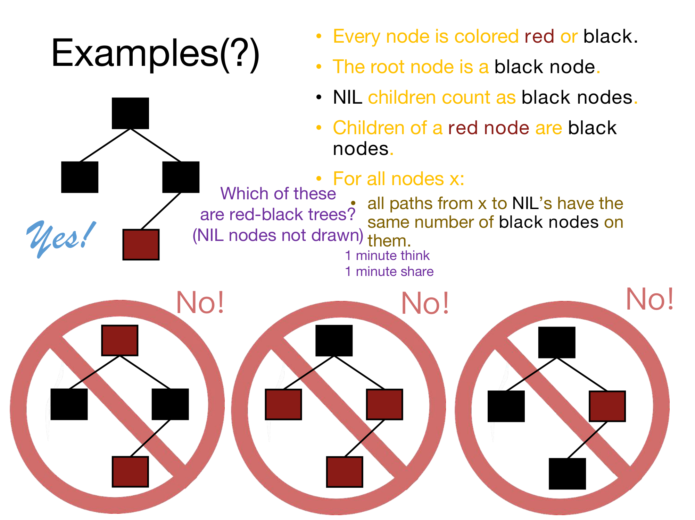
Yes!가 레드-블랙 트리임을 확인해 줍니다. 아래 세 트리는 모두 붉은 금지 표시와 No!가 붙은 반례입니다. 첫째는 왼쪽 위 트리와 모양이 같지만 뿌리가 빨강입니다. 둘째는 뿌리의 두 자식이 모두 빨강이고 오른쪽 빨강 아래에 또 빨강이 달려 있습니다. 셋째는 오른쪽 자식이 빨강이고 그 아래 검정 노드가 하나만 달려 있어, 그 빨간 노드에서 그려지지 않은 NIL 쪽으로 가는 경로와 검정 노드 쪽으로 가는 경로의 검정 노드 수가 다릅니다. 각 반례가 어느 규칙을 어기는지는 본문의 표에 정리했습니다.그림의 판정을 규칙별로 정리하면 다음과 같습니다(검정 노드 수는 출발 노드를 빼고 NIL을 포함해 셉니다).
| 트리 | 판정 | 이유 |
|---|---|---|
| 왼쪽 위 | 레드-블랙 트리 | 뿌리가 검정이고, 빨강은 검은 부모 아래 하나뿐이며, 뿌리에서 어느 NIL로 가도 검정 노드가 2개 |
| 아래 첫째 | 아님 | 뿌리가 빨강 — 규칙 2 위반 |
| 아래 둘째 | 아님 | 빨간 노드 아래에 빨간 자식 — 규칙 4 위반 (검정 수는 모든 경로에서 1개로 같음) |
| 아래 셋째 | 아님 | 빨간 오른쪽 자식에서 검은 자식 쪽 경로는 검정 2개, 비어 있는 쪽(NIL) 경로는 1개 — 규칙 5 위반 |
셋째 반례는 특히 눈여겨볼 만합니다. 빨강이 연달아 오지도 않고 뿌리도 검정이어서 얼핏 멀쩡해 보이지만, 규칙 5는 NIL 자식까지 포함한 모든 경로에 대한 조건이라서, 자식이 하나뿐인 노드 아래의 비어 있는 쪽도 세어야 합니다. 규칙 3에서 NIL을 검정으로 치기로 한 것이 바로 이 계산을 위해서입니다.
4.8 왜 하필 이 규칙들인가 (Why These Rules?)
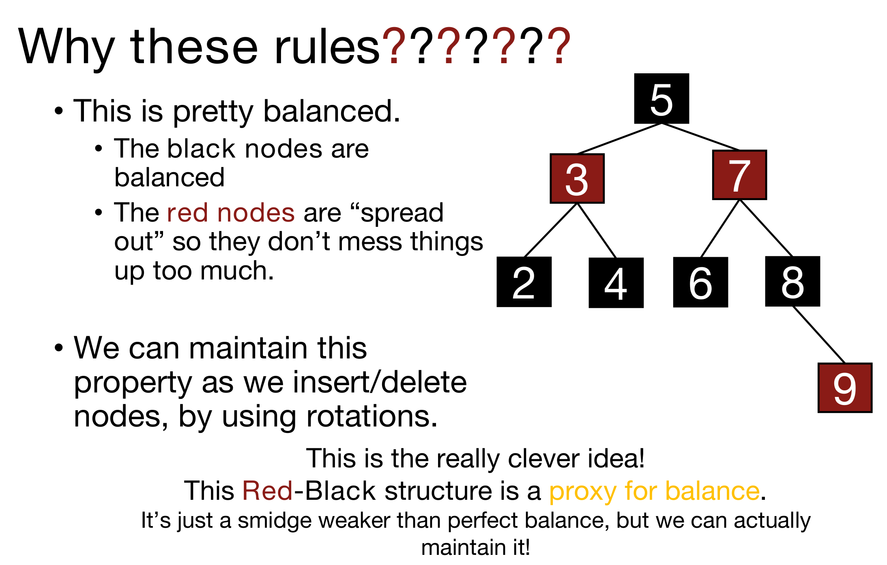
5(검정), 3과 7(빨강), 2, 4, 6, 8(검정), 그리고 8의 오른쪽 자식 9(빨강)로 이루어진 레드-블랙 트리입니다. 9 하나가 오른쪽 아래로 삐져나와 있어 완벽한 균형은 아니지만, 왼쪽 항목대로 꽤 균형 잡혀 있습니다 — 검정 노드들은 균형을 이루고(뿌리에서 어느 NIL로 가도 뿌리를 뺀 검정 노드가 NIL까지 두 개), 빨간 노드들은 흩어져 있어 크게 망치지 않습니다(빨강끼리 이어지지 않음). 아래 항목은 삽입·삭제 중에도 회전으로 이 성질을 유지할 수 있다고 말하고, 맨 아래 가운데 정렬된 세 줄이 강의의 핵심 메시지입니다 — 이것이 정말 영리한 아이디어이며, 레드-블랙 구조는 균형의 대리 지표이고, 완벽한 균형보다 아주 조금 약하지만 실제로 유지할 수 있다.- 이 트리는 꽤 균형 잡혀 있습니다.
- 검정 노드들은 균형을 이룹니다.
- 빨간 노드들은 “흩어져” 있어서 상황을 크게 망치지 않습니다.
- 노드를 삽입·삭제하는 동안 회전을 써서 이 성질을 유지할 수 있습니다.
이것이 정말 영리한 아이디어입니다! 이 레드-블랙 구조는 균형의 대리 지표입니다. 완벽한 균형보다 아주 조금 약하지만, 실제로 유지할 수 있습니다!
“검정 노드들이 균형을 이룬다”는 말은 이렇게 그려 볼 수 있습니다. 빨간 노드를 모두 지우고 그 자식들을 검은 부모에 바로 이어 붙인다고 상상하면(규칙 2와 4 때문에 빨간 노드의 부모는 언제나 검정입니다), 규칙 5에 의해 모든 NIL이 정확히 같은 깊이에 놓입니다. 자식이 둘보다 많아질 수는 있지만, 검정 노드들만 놓고 보면 완벽한 균형 트리인 셈입니다. 빨간 노드는 그 완벽한 뼈대 사이사이에 많아야 한 층씩 끼어드는 여유분이고, 바로 이 여유 덕분에 규칙을 싸게 유지할 수 있습니다.
4.9 이것은 “꽤 균형 잡혀” 있습니다 (This Is “Pretty Balanced”)
규칙이 균형을 보장한다는 것을 직관적으로 보기 위해, 슬라이드는 반대로 일부러 불균형한 레드-블랙 트리를 만들어 보자고 제안합니다.
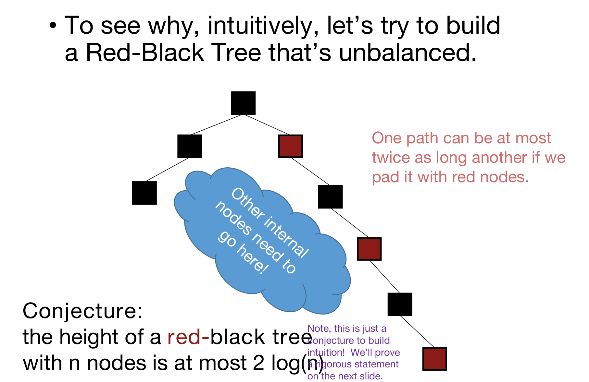
Other internal nodes need to go here!는 이 그림이 아직 완성된 트리가 아니라는 표시입니다. 긴 경로 위의 각 노드도 규칙 5를 만족해야 하므로 그 반대쪽 자식 아래에도 같은 수의 검정 노드가 있어야 하고, 따라서 구름 자리에 다른 내부 노드들이 잔뜩 들어가야 합니다. 왼쪽 아래 검은 글씨는 여기서 얻은 추측 — 노드가 \(n\)개인 레드-블랙 트리의 높이는 많아야 \(2\log(n)\)이다 —이고, 그 옆 보라색 글씨는 이것이 직관을 위한 추측일 뿐이며 엄밀한 명제는 다음 슬라이드에서 증명한다고 밝힙니다.그림에서 읽어 낼 수 있는 논리는 두 단계입니다.
- 경로 길이의 비율. 한 경로를 길게 늘이려면 빨간 노드를 끼워 넣어야 하는데(검정을 넣으면 규칙 5 때문에 다른 경로에도 검정을 넣어야 합니다), 빨강은 연달아 올 수 없으므로 검정과 번갈아 넣을 수밖에 없습니다. 그래서 빨간 노드로 채워 넣어도 한 경로는 다른 경로의 많아야 두 배입니다.
- 노드 수의 압박. 규칙 5는 뿌리뿐 아니라 모든 노드에 대해 성립해야 합니다. 긴 경로 위의 노드마다 반대쪽 서브트리에도 같은 수의 검정 노드가 있어야 하므로, 트리를 길게 늘일수록 다른 내부 노드들이 따라 불어나야 합니다. 높이가 크면 노드도 많아야 한다는 것, 뒤집어 말하면 노드 수가 주어지면 높이가 묶인다는 것입니다.
여기서 나온 추측은 다음과 같습니다 — 노드가 \(n\)개인 레드-블랙 트리의 높이는 많아야 \(2\log n\)이다. 슬라이드는 이것이 직관을 쌓기 위한 추측일 뿐이며, 엄밀한 명제는 다음 슬라이드에서 증명한다고 밝힙니다.
4.10 높이의 상한 (The Height of an RB-Tree with \(n\) Non-NIL Nodes Is at Most \(2\log(n+1)\))
엄밀한 명제는 추측과 거의 같고, \(\log n\) 대신 \(\log(n+1)\)이 들어갑니다. 여기서 \(n\)은 NIL이 아닌 노드의 수이고, 로그의 밑은 2입니다.
NIL이 아닌 노드가 \(n\)개인 레드-블랙 트리의 높이는 많아야 \(2\log(n+1)\)입니다.
\[\text{height} \;\le\; 2\log(n+1)\]
정의. 노드 \(x\)에 대해 \(b(x)\)를 \(x\)에서 NIL까지 가는 임의의 경로 위의 검정 노드 수로 정의합니다. 이때 \(x\) 자신은 빼고, NIL은 포함합니다.
- “임의의” 경로라고 해도 되는 것은 규칙 5 덕분입니다. \(x\)에서 NIL까지 가는 모든 경로의 검정 노드 수가 같으므로, 어느 경로로 세든 같은 값이 나와 \(b(x)\)가 잘 정의됩니다.
- 참고로 표준 교과서(CLRS 13장)는 같은 양을 검정 높이(black-height)라고 부르고 \(\mathrm{bh}(x)\)로 씁니다.
주장(Claim). \(x\)를 뿌리로 하는 서브트리(\(x\) 포함)에는 NIL이 아닌 노드가 적어도 \(2^{b(x)} - 1\)개 있습니다.
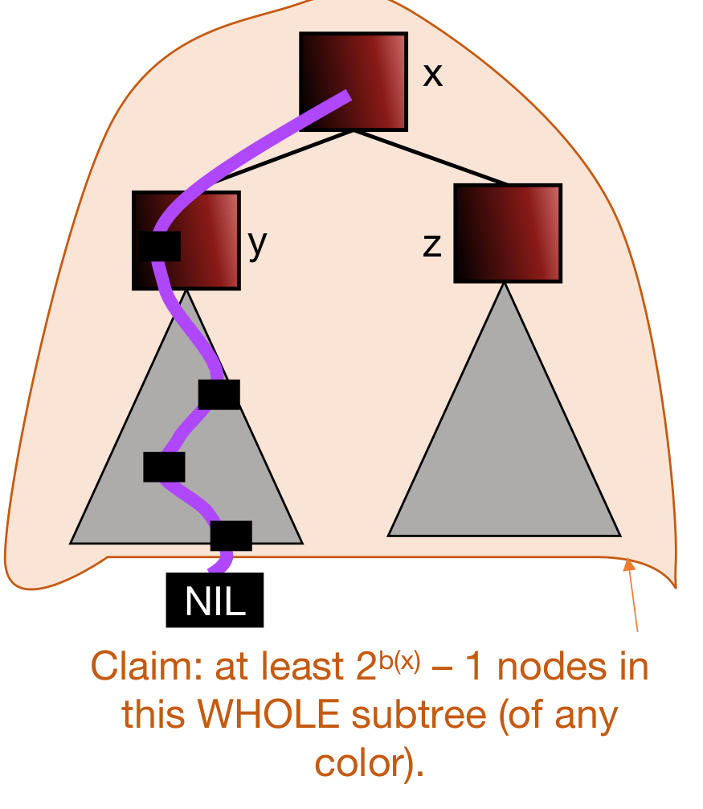
x와 그 두 자식 y, z는 붉은색에서 검은색으로 번지는 그라데이션 상자로 그려져 있어, 빨강일 수도 검정일 수도 있는 임의의 노드로 읽힙니다. 회색 삼각형은 y와 z 아래의 서브트리이고, 보라색 곡선은 x에서 출발해 y를 지나 왼쪽 서브트리 깊숙이 내려가 맨 아래 NIL에 닿는 한 경로이며, 그 위에 찍힌 작은 검은 사각형들이 이 경로가 지나는 검정 노드입니다. 그 개수(x 자신은 빼고 NIL은 포함)가 \(b(x)\)이고, 규칙 5 덕분에 어느 경로를 골라도 이 개수는 같습니다. x의 서브트리 전체를 감싼 주황색 윤곽이 주장이 말하는 범위이며, 아래 주황 글씨가 주장을 적고 있습니다 — 이 서브트리 전체에는 색에 관계없이 적어도 \(2^{b(x)} - 1\)개의 노드가 있다. 검정 노드를 많이 지나는 경로일수록 그 경로를 품은 서브트리가 기하급수적으로 커야 한다는 것이 이 그림의 요점이며, 이것이 높이를 로그로 묶는 열쇠입니다.슬라이드는 주장의 증명을 “귀납법으로 — 시간이 되면 칠판에서”로 넘겼으므로, 표준적인 귀납 논증으로 채워 보겠습니다. 편의상 \(x\)를 뿌리로 하는 서브트리의 NIL이 아닌 노드 수를 \(N(x)\)라 쓰겠습니다(슬라이드에는 없는 기호입니다). 서브트리의 높이에 대한 귀납법입니다.
- 기저 사례: \(x\)가 NIL이면, \(x\)를 빼고 나면 경로에 남는 노드가 없으므로 \(b(x) = 0\)이고, \(N(x) = 0 \ge 2^0 - 1 = 0\)입니다.
- 귀납 단계: \(x\)가 NIL이 아니고 두 자식이 \(y\), \(z\)라고 합시다. \(x\)에서 NIL로 가는 경로는 반드시 두 자식 중 하나 \(c\)를 지나며, \(b(x)\)는 \(c\)가 검정이면 \(c\) 자신까지 하나 더 셉니다.
\[ b(x) = \begin{cases} b(c) + 1 & (c\text{가 검정}) \\ b(c) & (c\text{가 빨강}) \end{cases} \qquad\Longrightarrow\qquad b(c) \;\ge\; b(x) - 1 \]
- 두 자식의 서브트리는 \(x\)의 서브트리보다 낮으므로 귀납 가정을 쓸 수 있고, 각각 NIL이 아닌 노드를 적어도 \(2^{b(c)} - 1 \ge 2^{b(x)-1} - 1\)개 가집니다. 여기에 \(x\) 자신을 더하면 다음을 얻습니다.
\[ N(x) \;\ge\; 1 + \bigl(2^{b(x)-1} - 1\bigr) + \bigl(2^{b(x)-1} - 1\bigr) \;=\; 2^{b(x)} - 1 \qquad \blacksquare \]
뿌리의 검정 노드 수는 높이의 절반 이상입니다. 슬라이드는 이것을 “레드-블랙 트리 규칙 때문에”라고만 적었으므로 풀어 보겠습니다. 뿌리에서 가장 깊은 잎까지의 경로를 \(v_0, v_1, \ldots, v_h\)라 하고(\(v_0\)는 뿌리, \(h\)는 높이), 그 잎 아래의 NIL을 \(v_{h+1}\)이라 합시다. \(b(\text{root})\)는 \(v_1, \ldots, v_{h+1}\) 가운데 검정 노드의 수입니다.
- \(v_{h+1}\)은 NIL이므로 검정입니다(규칙 3).
- \(v_i\) (\(1 \le i \le h\))가 빨강이면, 그 자식 \(v_{i+1}\)은 검정입니다(규칙 4).
- 따라서 빨간 노드마다 바로 아래의 검정 노드를 하나씩 짝지을 수 있고, 서로 다른 빨강은 서로 다른 검정과 짝지어집니다. 곧 (빨강의 수) \(\le\) (검정의 수)입니다.
- 둘을 합치면 \(h+1\)개이므로 검정은 적어도 절반입니다.
\[b(\text{root}) \;\ge\; \frac{h+1}{2} \;\ge\; \frac{\text{height}}{2}\]
정리의 증명. 이제 두 조각을 이어 붙이면 됩니다.
\[ \begin{aligned} n &\ge 2^{b(\text{root})} - 1 && (\text{주장을 뿌리에 적용}) \\ &\ge 2^{\text{height}/2} - 1 && (b(\text{root}) \ge \text{height}/2) \\[4pt] n + 1 &\ge 2^{\text{height}/2} && (\text{양변에 1을 더함}) \\ \log_2(n+1) &\ge \text{height}/2 && (\text{양변에 } \log_2) \\ \text{height} &\le 2\log_2(n+1) && \blacksquare \end{aligned} \]
§4.9의 추측(\(2\log n\))과 비교하면, 엄밀한 형태는 \(n\) 대신 \(n+1\)이 들어간다는 점만 다릅니다. \(2^{b} - 1\)이라는 개수에서 \(-1\)이 넘어온 결과이며, 점근적으로는 똑같이 \(O(\log n)\)입니다.
4.11 이것은 훌륭합니다 (This Is Great!)
- 레드-블랙 트리에서의 SEARCH는 곧바로 \(O(\log n)\)입니다. 레드-블랙 트리의 깊이가 \(O(\log n)\)이기 때문입니다. SEARCH는 트리를 바꾸지 않으므로 일반 BST의 SEARCH를 그대로 쓰면 됩니다.
- INSERT와 DELETE는 어떨까요?
- 레드-블랙 트리 성질을 유지하면서 원소를 \(O(\log n)\) 시간에 삽입하고 삭제할 수 있다는 것이 알려져 있습니다.
- 그래서 이것이 좋은 성질입니다!
§4.4에서 대리 지표가 갖춰야 할 조건은 두 가지였습니다 — (1) 성립하면 꽤 균형 잡혀 있다, (2) 싸게 유지할 수 있다. §4.10이 (1)을 증명했고, (2)가 이 절의 두 번째 항목입니다. 두 조건이 모두 성립해야 대리 지표가 쓸모 있다는 점이 중요합니다. 예를 들어 “완벽한 균형”은 (1)을 가장 강하게 만족하지만 (2)에서 실패합니다.
4.12 삽입과 삭제 (INSERT/DELETE)
슬라이드는 여기서 수업 시간이 다 되었을 것이라고 예상하며 다음과 같이 선을 긋습니다.
- 궁금한 사람이 볼 수 있도록 레드-블랙 트리의 INSERT/DELETE 방법을 다룬 슬라이드를 뒤에 실어 두었습니다.
- 더 자세한 내용은 CLRS 13장을 보라고 합니다.
- 이 수업에서는 레드-블랙 트리 INSERT/DELETE의 세부 사항에 대해 책임지지 않아도 됩니다.
- “균형의 대리 지표” 성질이 무엇이고, 그것이 왜 근사적인 균형을 보장하는지는 알아야 합니다.
- 이 성질을 효율적으로 유지할 수 있다는 사실은 알아야 하지만, 어떻게 하는지의 세부 사항은 몰라도 됩니다.
이 PDF에 실린 뒷부분은 삽입 사례들입니다. 삭제는 따로 다루지 않고 CLRS 13장에 맡겨 두었습니다. 아래는 그 삽입 슬라이드들을 순서대로 옮긴 것입니다.
4.13 삽입: 여러 경우 (INSERT: Many Cases)
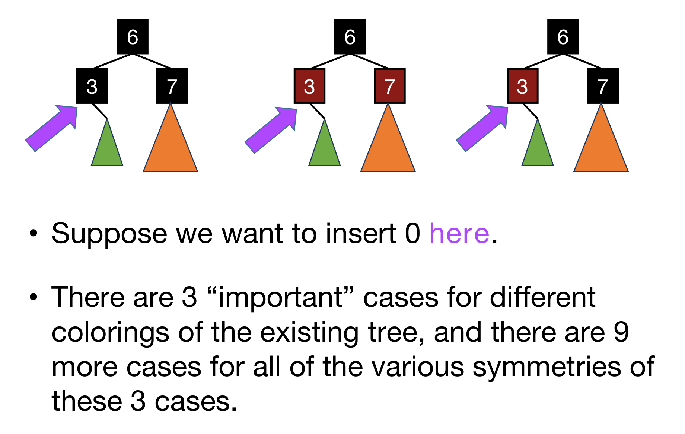
0을 삽입할 때 고려해야 할 세 가지 대표 상황입니다. 세 그림 모두 검은 6 아래 왼쪽에 3, 오른쪽에 7이 있고, 보라색 화살표가 새 노드 0이 들어갈 자리 — 3의 왼쪽 자식 — 를 가리킵니다. 초록 삼각형은 3의 오른쪽 서브트리, 주황 삼각형은 7 아래의 서브트리입니다. 세 상황은 3과 7의 색만 다릅니다 — 왼쪽은 둘 다 검정, 가운데는 둘 다 빨강, 오른쪽은 3만 빨강이고 7은 검정입니다. 아래 글씨대로 기존 트리의 색칠에 따라 “중요한” 경우가 3가지, 그리고 이 세 경우의 여러 대칭형이 9가지 더 있습니다. 새 노드의 부모(3)와 그 형제(7)의 색이 어떤 수선이 필요한지를 결정한다는 것이 이 분류의 요점입니다.- 보라색 화살표가 가리키는 자리(
3의 왼쪽 자식)에0을 삽입하려 한다고 합시다. - 기존 트리의 색칠에 따라 “중요한” 경우가 3가지 있고, 이 세 경우의 여러 대칭형이 9가지 더 있습니다.
앞으로의 설명을 위해 관계 이름을 정해 두겠습니다. 새 노드 0의 부모는 3, 조부모는 6이고, 부모의 형제인 7을 표준 교과서의 용어대로 삼촌(uncle)이라 부르겠습니다. 세 경우는 부모와 삼촌의 색으로 갈립니다. 3이 빨강인 두 경우에는 규칙 4에 의해 6이 반드시 검정입니다.
4.14 삽입: 경우 1 (INSERT: Case 1)
- 새 빨간 노드를 만듭니다.
- 평소처럼(§3.8의 BST 삽입대로) 넣습니다.
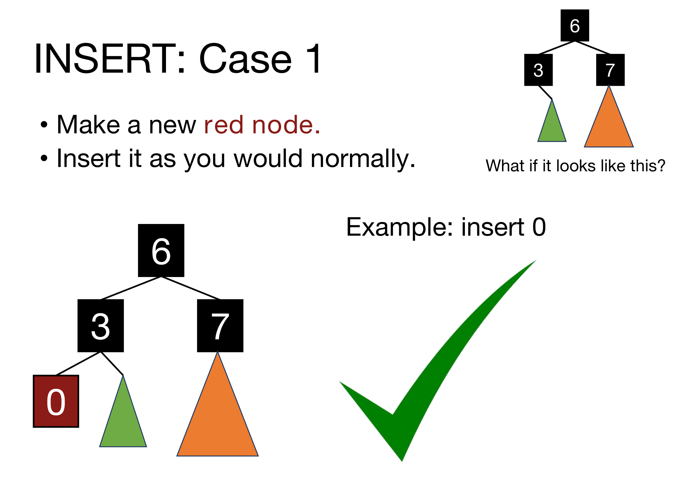
What if it looks like this?)가 상황을 요약합니다: 검은 6 아래 검은 3과 검은 7. 왼쪽 위 두 항목이 절차입니다 — 새 빨간 노드를 만들고, 평소처럼 삽입한다. 아래 트리가 0을 삽입한 결과로, 붉은 상자 0이 검은 3의 왼쪽 자식으로 들어갔고 초록·주황 삼각형은 그대로입니다. 초록색 체크 표시가 말하듯 이것으로 끝입니다. 빨간 노드는 검정 수를 세는 규칙 5에 아무 영향을 주지 않고(원래 그 자리의 NIL이 하던 몫을 0 아래의 NIL이 이어받습니다), 부모 3이 검정이므로 빨강이 연달아 오는 일도 생기지 않기 때문입니다.왜 이것으로 충분한지 규칙별로 확인하면 다음과 같습니다.
- 규칙 5:
0이 들어가기 전 그 자리에는 NIL(검정 1개)이 있었습니다. 들어간 뒤에는 빨간0과 그 아래 NIL이 있으므로, 그 경로의 검정 수는 여전히 1개입니다. 빨간 노드는 검정 수를 바꾸지 않습니다. - 규칙 4:
0의 부모3이 검정이므로 빨강이 연달아 오지 않습니다.0의 자식은 NIL(검정)입니다. - 삼촌
7의 색은 이 논증에 전혀 쓰이지 않았습니다. 부모가 검정이기만 하면 삼촌의 색과 무관하게 경우 1입니다.
다음 슬라이드는 세 경우를 다시 늘어놓고 첫 번째 그림에 초록 체크 표시를 붙여, 경우 1이 해결되었음을 표시합니다.
4.15 삽입: 경우 2 (INSERT: Case 2)
- 새 빨간 노드를 만듭니다.
- 평소처럼 넣습니다.
- 필요하면 고칩니다(Fix things up if needed).
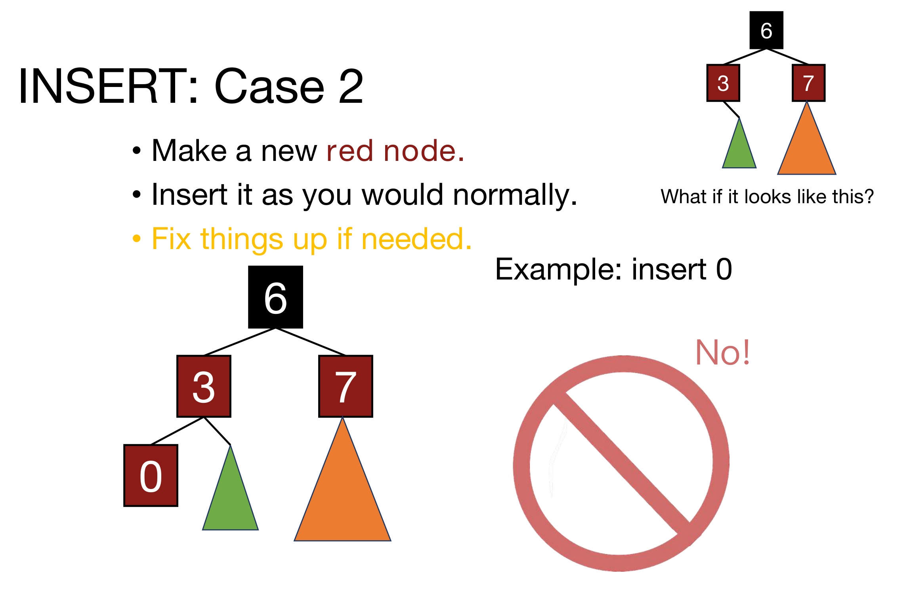
6 아래 붉은 3과 붉은 7. 절차는 경우 1과 같지만 세 번째 항목이 노란 글씨로 추가되어 있습니다 — 필요하면 고친다. 아래 트리는 0을 경우 1처럼 빨강으로 넣은 결과인데, 붉은 3 아래에 붉은 0이 달려 빨간 노드의 자식이 빨강이 되었습니다. 규칙 4 위반이므로 오른쪽에 붉은 금지 표시와 No!가 붙어 있습니다. 새 노드를 빨강으로 넣는다는 원칙만으로는 부족하고, 이 위반을 어떻게 해소할지가 이 경우의 과제라는 것을 보여 주는 그림입니다.0을 그냥 검정으로 넣으면 안 될까요? 슬라이드의 답은 안 된다입니다.
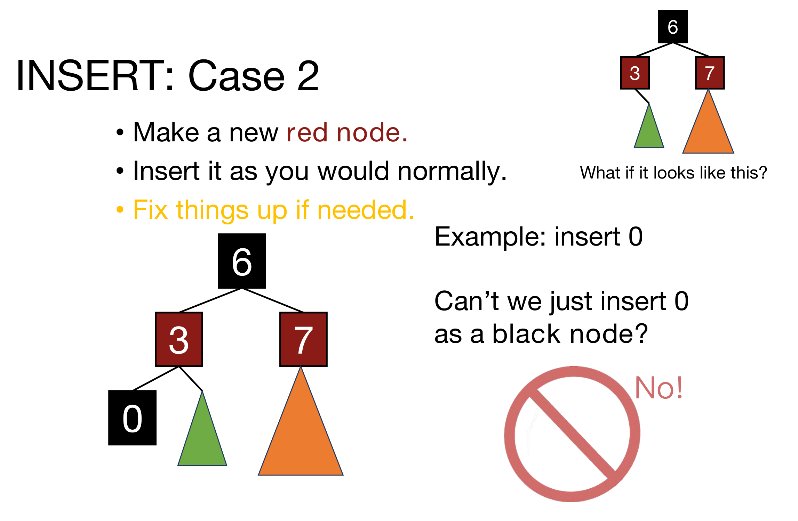
0을 그냥 검정으로 넣으면 안 되나? — 이 왜 실패하는지를 보인 그림입니다. 트리와 절차는 앞 그림과 같고, 이번에는 0이 검은 상자로 붉은 3의 왼쪽 자식이 되어 있습니다. 빨강이 연달아 오지는 않으므로 규칙 4는 지켜지지만, 붉은 금지 표시와 No!가 답하듯 이것도 틀렸습니다. 0이 들어가기 전 그 자리는 NIL 하나(검정 1개)였는데, 이제 그 경로에는 검은 0과 그 아래 NIL(검정 2개)이 놓여, 6이나 3에서 0 쪽으로 가는 경로만 검정 노드가 하나 늘어납니다. 모든 경로의 검정 수가 같아야 한다는 규칙 5가 깨지는 것입니다. 이 그림은 새 노드를 왜 항상 빨강으로 넣는지를 설명해 줍니다 — 빨강은 규칙 5를 절대 건드리지 않으므로, 고쳐야 할 것이 규칙 4 하나로 좁혀집니다.새 노드를 왜 항상 빨강으로 넣는지가 여기서 드러납니다. 두 선택지의 대가를 비교해 보겠습니다.
- 검정으로 넣으면 규칙 5가 깨집니다. 그런데 규칙 5는 트리 전체의 모든 경로에 걸친 조건이라, 한 경로의 검정 수가 늘어난 것을 되돌리려면 트리의 먼 곳까지 손대야 할 수 있습니다.
- 빨강으로 넣으면 규칙 5는 절대 깨지지 않고, 깨질 수 있는 것은 새 노드와 그 부모 사이의 규칙 4, 곧 한 지점에 국한된 위반뿐입니다.
국소적인 위반은 국소적으로 고칠 수 있습니다. 경우 2와 경우 3의 수선 작업이 모두 새 노드 근처의 몇 개 노드만 건드리는 것은 이 선택 덕분입니다.
조금 더 넓은 맥락이 필요합니다 (We Need a Bit More Context)
경우 2를 고치려면 6 위쪽까지 보아야 합니다. 6의 부모가 검은 노드 -1이고, -1의 왼쪽에는 회색 서브트리가 있다고 합시다.
0을 빨간 노드로 넣습니다.- 그다음 색을 뒤집습니다(Flip colors!) — 조부모
6을 빨강으로, 부모3과 삼촌7을 검정으로 바꿉니다. - 주장: 레드-블랙 트리의 성질이 여전히 성립합니다.
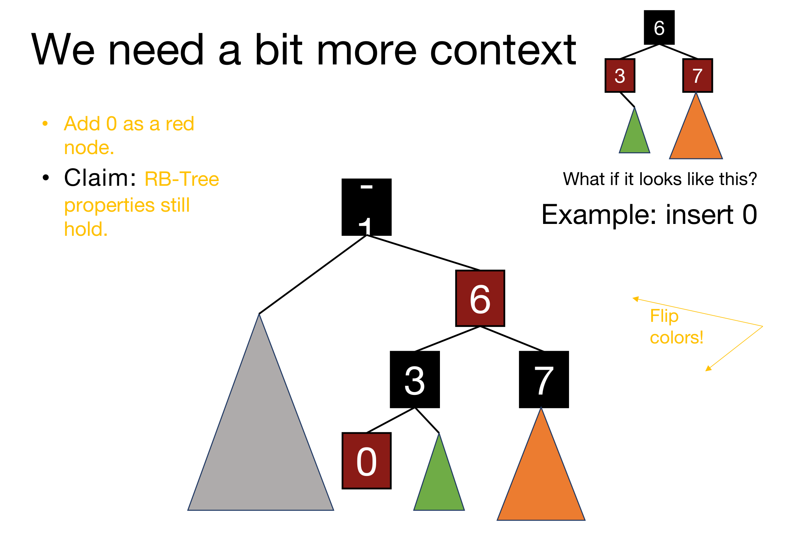
6, 붉은 3과 7)이고, 가운데 트리는 6의 부모로 검은 노드 -1(원본에서 -와 1이 두 줄로 줄바꿈되어 있습니다)과 그 왼쪽의 회색 서브트리까지 그려 넣은 것입니다. 왼쪽 노란 항목대로 먼저 0을 빨간 노드로 넣고, 오른쪽 노란 화살표의 Flip colors!대로 색을 뒤집습니다 — 6은 빨강으로, 3과 7은 검정으로 바뀌어 그림처럼 됩니다. 왼쪽의 주장 Claim: RB-Tree properties still hold.가 성립하는 이유는 세 가지입니다. 첫째, 6을 지나 3이나 7 쪽으로 가는 경로에서는 뒤집기 전에도 후에도 6과 그 자식 중 정확히 하나가 검정이므로 검정 수가 그대로입니다. 둘째, 0의 부모 3이 검정이 되어 빨강–빨강이 사라졌습니다. 셋째, 새로 빨강이 된 6의 부모 -1이 검정이라 여기서도 문제가 생기지 않습니다.주장이 성립하는 이유를 규칙별로 보면 다음과 같습니다.
- 규칙 5: 뒤집기 전에는
6(검정)–3(빨강),6(검정)–7(빨강)이었고, 뒤집은 뒤에는6(빨강)–3(검정),6(빨강)–7(검정)입니다.6을 지나는 어떤 경로든6과 그 자식 중 정확히 하나가 검정이라는 사실은 그대로이므로, 모든 경로의 검정 수가 변하지 않습니다. - 규칙 4:
0의 부모3이 검정이 되어 원래의 위반이 사라졌습니다. 새로 검정이 된3과7아래로는 문제가 생길 수 없습니다. 새로 빨강이 된6의 자식3,7은 검정이고,6의 부모-1도 검정입니다.
그런데 그것이 빨강이었다면? (But What If That Was Red?)
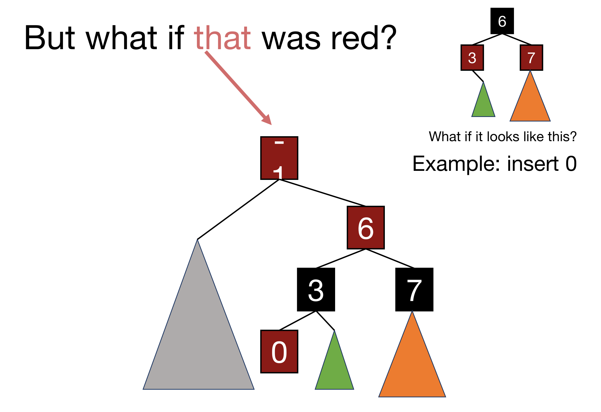
that에서 뻗은 화살표가 가리키듯, 이번에는 6의 부모 -1이 빨강입니다. 오른쪽 위 작은 트리와 아래 부분(6 아래 검은 3과 7, 3 아래 붉은 0, 초록·주황 삼각형)은 앞 그림의 색 뒤집기 결과와 같습니다. 그런데 뒤집기로 빨강이 된 6이 붉은 -1의 자식이 되었으므로, 원래 0과 3 사이에 있던 빨강–빨강 위반이 두 층 위로 옮겨 온 셈입니다. 색 뒤집기는 문제를 없애지 못할 때에도 적어도 문제를 위로 밀어 올린다는 것이 이 그림의 요점이며, 다음 그림이 이것을 재귀로 처리합니다.더 넓은 맥락… (More Context…)
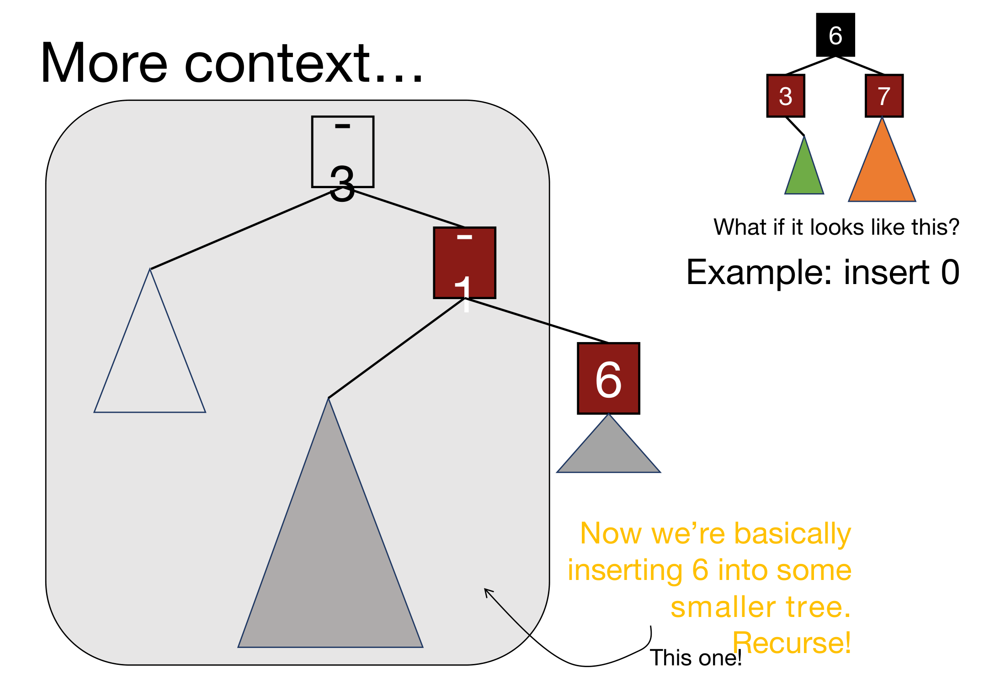
-1의 부모 -3과 그 왼쪽 서브트리(흰 삼각형)까지 그렸는데, -3은 흰 상자로 그려져 있어 색을 정하지 않은 노드로 읽힙니다. 6 아래의 부분은 회색 삼각형 하나로 접었습니다. 회색 둥근 사각형이 -3, 붉은 -1, 그리고 그들의 다른 서브트리를 감싸고 있으며, 아래 검은 글씨 This one!과 화살표가 바로 이 영역을 가리킵니다. 노란 글씨가 결론입니다 — 이제 우리는 사실상 어떤 더 작은 트리에 6을 삽입하고 있는 것이다. 재귀하라! 빨강이 된 6은 위쪽 트리의 입장에서 보면 방금 새로 들어온 빨간 노드와 똑같은 처지이므로, 같은 경우 분석을 6에 대해 다시 적용하면 됩니다. 원본 슬라이드에서 음수 라벨 -3, -1은 -와 숫자가 두 줄로 줄바꿈되어 있습니다.이제 우리는 사실상 어떤 더 작은 트리에 6을 삽입하고 있는 것입니다. 재귀하세요!
색 뒤집기 직후의 6을 위쪽 트리에서 바라보면, 방금 들어온 빨간 새 노드와 처지가 똑같습니다. 6 아래쪽은 이미 모든 규칙을 만족하고, 남은 위반은 6과 그 부모 사이의 빨강–빨강 하나뿐이기 때문입니다. 그러므로 6을 새 노드로 보고 같은 경우 분석을 한 단계 위에서 다시 적용하면 됩니다 — 부모 -1과 그 형제(6의 새 삼촌)의 색을 보고 경우 1·2·3 중 하나를 고릅니다.
예시, 1부 (Example, Part I)
구체적인 트리로 따라가 보겠습니다. 원래 트리는 뿌리 -3(검정) 아래 왼쪽에 -4(검정), 오른쪽에 -1(빨강)이 있고, -1 아래 -2(검정)와 6(검정), 6 아래 3과 7(둘 다 빨강)이 달린 레드-블랙 트리입니다. 여기에 0을 3의 왼쪽 자식으로 넣으려 합니다.
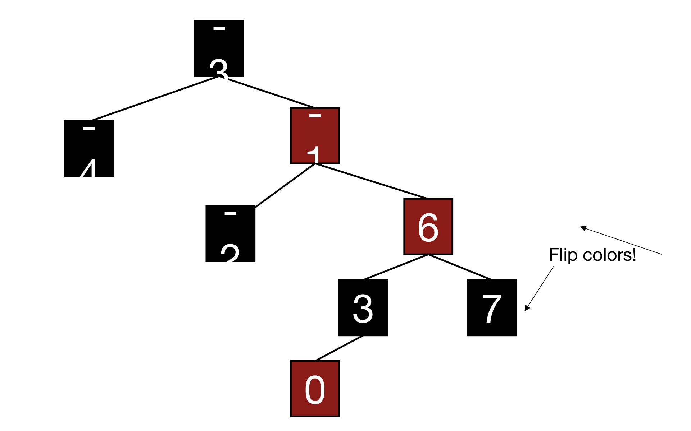
-3(검정) 아래 왼쪽에 -4(검정), 오른쪽에 -1(빨강), -1 아래 -2(검정)와 6(검정), 6 아래 3과 7(둘 다 빨강)이 달린 레드-블랙 트리였고, 여기에 0을 3의 왼쪽 자식으로 넣으려 합니다. 부모 3과 삼촌 7이 모두 빨강이므로 경우 2이고, 그림은 0을 빨강으로 넣은 뒤 오른쪽 검은 화살표의 Flip colors!대로 색을 뒤집은 결과입니다 — 6은 빨강, 3과 7은 검정이 되었습니다. 0과 3 사이의 위반은 사라졌지만, 이제 붉은 6의 부모 -1도 빨강이어서 앞의 “그런데 그것이 빨강이었다면?” 상황이 그대로 벌어졌습니다. 원본 슬라이드에서 음수 라벨들은 -와 숫자가 두 줄로 줄바꿈되어 있습니다.3과7이 모두 빨강이므로 경우 2입니다.0을 빨강으로 넣고 색을 뒤집습니다.- 그 결과
6이 빨강이 되었는데, 그 부모-1도 빨강입니다. 위반이 두 층 위로 올라왔습니다.
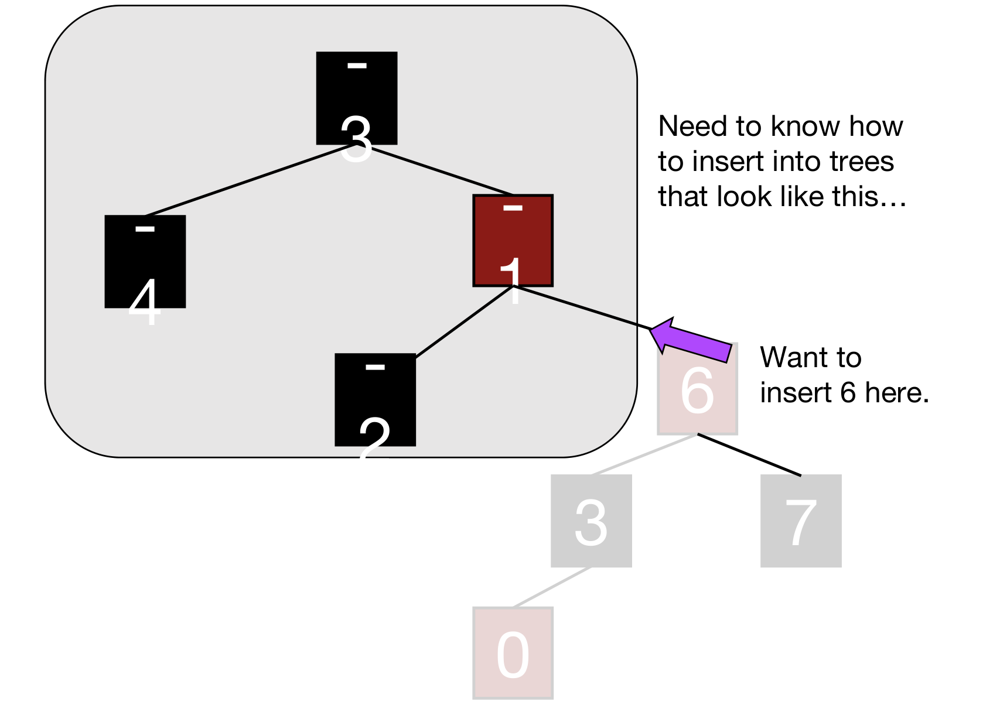
6 아래의 부분(6, 3, 7, 0)은 흐리게 처리되어 이미 정리가 끝났음을 나타내고, 회색 둥근 사각형이 나머지 트리 — -3(검정), -4(검정), -1(빨강), -2(검정) — 를 감쌉니다. 오른쪽 글씨가 상황을 요약합니다 — 이런 모양의 트리에 삽입하는 법을 알아야 하고, 보라색 화살표가 가리키는 -1의 오른쪽 자식 자리에 6을 넣고 싶다. 곧 빨간 6을 빨간 부모 -1 아래에 넣는 문제가 되었고, 이때 -1의 형제 -4는 검정입니다. 부모는 빨강, 삼촌은 검정 — 이것이 바로 세 번째 경우입니다.- 이제 “이런 모양의 트리에 삽입하는 법”을 알아야 합니다 — 회색 상자 속 트리의
-1오른쪽 자리에 빨간6을 넣는 문제입니다. - 새 노드
6의 부모-1은 빨강, 삼촌-4는 검정입니다.
다음 슬라이드는 세 경우를 다시 늘어놓고 세 번째 그림 위에 붉은 글씨로 “바로 이 경우입니다!(That’s this case!)”라고 적습니다. 경우 2의 재귀가 경우 3으로 넘어간 것입니다.
4.16 삽입: 경우 3 (INSERT: Case 3)
- 새 빨간 노드를 만듭니다.
- 평소처럼 넣습니다.
- 필요하면 고칩니다.
상황은 검은 6 아래 빨간 3과 검은 7이고, 0을 넣습니다. 슬라이드는 0 아래에 서브트리가 달려 있을 수도 있다고 덧붙입니다. 예시 1부처럼 재귀 도중에 이 경우를 만나면 “새 노드”는 색 뒤집기로 빨강이 된 노드이고, 그 아래에는 이미 정리된 서브트리가 달려 있기 때문입니다.
회전 다시 보기 (Recall Rotations)
여기서 슬라이드는 §4.1의 회전 그림을 그대로 다시 보여 줍니다 — BST 성질을 유지하면서 노드들을 옮긴다. 경우 3의 수선 도구가 바로 이 회전입니다.
레드-블랙 트리에 삽입하기 (Inserting into a Red-Black Tree)
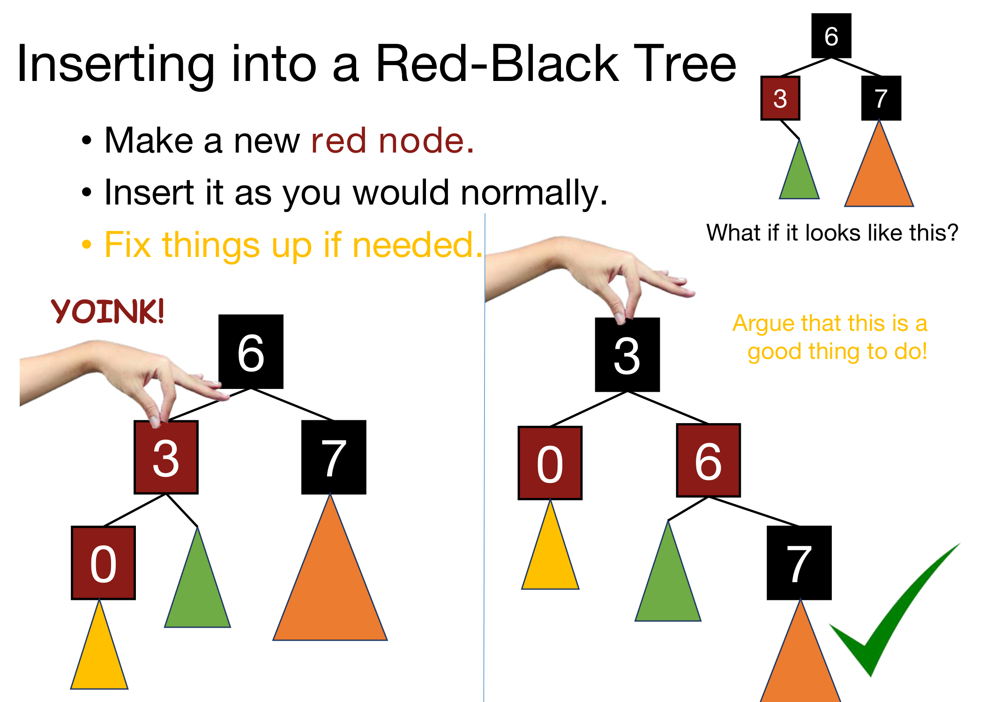
6 아래 붉은 3과 검은 7. 왼쪽 트리는 붉은 0(아래에 노란 서브트리가 달려 있을 수도 있습니다)이 붉은 3 아래에 들어가 빨강–빨강 위반이 생긴 상태이고, 손이 3을 집어 올립니다(YOINK!). 오른쪽 트리가 회전과 재색칠의 결과입니다 — 3이 검정으로 칠해져 이 부분의 새 뿌리가 되고, 왼쪽에는 붉은 0(노란 서브트리 그대로), 오른쪽에는 빨강으로 바뀐 6이 내려옵니다. 6은 원래 3의 오른쪽 서브트리였던 초록 삼각형을 왼쪽 자식으로, 검은 7(주황 서브트리 그대로)을 오른쪽 자식으로 갖습니다. 초록 체크 표시가 결과가 올바름을 나타내고, 노란 글씨는 이것이 좋은 조치임을 논증해 보라는 과제입니다 — 논증은 본문에 적었습니다. 초록 삼각형이 3의 오른쪽에서 6의 왼쪽으로 옮겨 가는 것이 회전 그림의 “B가 떨어졌다”에 정확히 해당합니다.조치는 두 단계입니다.
- 회전: 부모
3을 집어 올립니다(YOINK!). §4.1의 기호로X = 6,Y = 3,A=0과 그 아래,B= 초록 서브트리,C=7과 그 아래입니다. - 재색칠: 새 꼭대기
3을 검정으로, 내려간6을 빨강으로 칠합니다.
슬라이드는 “이것이 좋은 조치임을 논증해 보라”며 과제로 남겼습니다. 규칙별로 확인해 보겠습니다.
- BST 성질: 회전은 BST 성질을 지킵니다(§4.1).
- 규칙 5: 빨간 새 노드는 검정 수를 바꾸지 않으므로, 수선 전에도 규칙 5는 성립하고 있었습니다. 곧 꼭대기
6아래에서 노란·초록·주황 서브트리로 내려가는 경로들은 검정 수가 모두 같았습니다. 그 공통값을 \(k\)라 합시다.- 각 경로가 서브트리에 닿기 전에 지나는 노드만 비교하면 됩니다. 노란 쪽은 수선 전
3(빨강)·0(빨강), 수선 후0(빨강)을 지나고, 초록 쪽은 수선 전3(빨강), 수선 후6(빨강)을 지나며, 주황 쪽은 수선 전7(검정), 수선 후6(빨강)·7(검정)을 지납니다. 어느 쪽이든 그 구간의 검정 수가 수선 전후로 같으므로(노란·초록 0개, 주황 1개), 모든 경로의 검정 수가 그대로 \(k\)입니다. - 꼭대기 자신도 수선 전(
6)과 후(3) 모두 검정이므로, 이 부분 트리 바깥에서 보는 검정 수는 전혀 변하지 않습니다.
- 각 경로가 서브트리에 닿기 전에 지나는 노드만 비교하면 됩니다. 노란 쪽은 수선 전
- 규칙 4: 빨간
0의 부모3은 이제 검정입니다. 빨간6의 자식은 초록 서브트리의 뿌리(원래 빨간3의 자식이었으므로 검정)와 검은7입니다.0아래의 노란 서브트리는 손대지 않았으므로 그대로입니다. - 위쪽과의 경계: 새 꼭대기
3이 검정이므로, 그 위에 어떤 색의 노드가 있든 빨강–빨강이 생기지 않습니다. 따라서 수선이 여기서 끝납니다. 문제를 위로 떠넘기던 경우 2와 결정적으로 다른 점입니다.
예시, 2부 (Example, Part 2)
예시 1부에서 넘어온 문제 — 빨간 -1의 오른쪽 자리에 빨간 6을 넣는 것 — 를 경우 3으로 해결합니다.
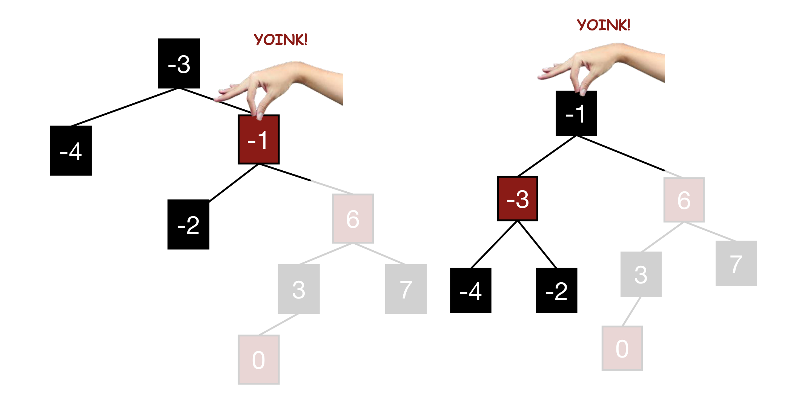
-1의 오른쪽 자리에 빨간 6을 넣는 것 — 를 경우 3으로 해결하는 장면입니다. 왼쪽 트리에서 -3(검정)의 왼쪽 자식은 -4(검정), 오른쪽 자식은 -1(빨강)이고, -1의 왼쪽 자식은 -2(검정), 오른쪽 자식 자리에는 흐리게 그려진 붉은 6(그 아래 흐린 3, 7, 0)이 들어와 있습니다. 부모 -1이 오른쪽 자식이고 새 노드 6도 오른쪽 자식이므로, 앞 그림의 경우 3을 좌우로 뒤집은 대칭형입니다. 손이 -1을 집어 올리면(YOINK!) 오른쪽 트리가 됩니다 — -1이 검정이 되어 전체의 새 뿌리가 되고, 그 왼쪽으로 빨강이 된 -3이 내려와 -4와 -2를 두 자식으로 갖습니다. 원래 -1의 왼쪽 자식이던 -2가 -3의 오른쪽 자식으로 옮겨 간 것이 회전에서 “떨어지는” 서브트리입니다. 오른쪽에는 흐린 6(빨강)과 그 아래 3, 7(검정), 0(빨강)이 그대로 달려 있으며, 이 트리는 다섯 규칙을 모두 만족합니다.- 부모
-1이 조부모-3의 오른쪽 자식이고, 새 노드6도-1의 오른쪽 자식입니다. 경우 3을 좌우로 뒤집은 대칭형으로, §4.13에서 말한 “대칭형 9가지” 가운데 하나입니다. -1을 집어 올려 회전하고,-1을 검정으로,-3을 빨강으로 칠합니다.- 최종 트리를 확인하면 뿌리
-1은 검정이고, 빨간 노드-3,6,0의 자식은 모두 검정(또는 NIL)이며, 뿌리에서 어느 NIL로 가도 뿌리를 빼면 검정 노드가 NIL까지 두 개입니다. 예를 들어-1 → -3 → -4 → NIL은-4와 NIL,-1 → 6 → 3 → 0 → NIL은3과 NIL입니다.
모든 경우 해결 (Many Cases)
마지막 슬라이드는 세 경우의 그림 모두에 초록 체크 표시를 붙입니다. 세 경우를 한 표로 정리하면 다음과 같습니다.
| 경우 | 부모 (3) |
삼촌 (7) |
조치 | 이후 |
|---|---|---|---|---|
| 1 | 검정 | 무관 | 빨간 새 노드를 넣기만 한다 | 끝 |
| 2 | 빨강 | 빨강 | 색 뒤집기: 조부모 6 → 빨강, 3·7 → 검정 |
6의 부모가 빨강이면 6을 새 노드로 보고 위에서 반복 |
| 3 | 빨강 | 검정 | 부모 3을 집어 올리는 회전 + 재색칠(3 → 검정, 6 → 빨강) |
끝 |
슬라이드는 결론(§4.11)만 적었으므로 각 단계의 비용을 모아 보겠습니다.
- 자리 찾기: 평소의 BST 삽입이므로 \(O(\text{height}) = O(\log n)\)입니다.
- 경우 1: 추가 작업이 없습니다.
- 경우 2: 색 세 개를 바꾸는 \(O(1)\) 작업이고, 위반이 두 층 위로 올라갑니다. 트리의 높이가 \(O(\log n)\)이므로 이 반복은 많아야 \(O(\log n)\)번입니다.
- 경우 3: 회전 한 번과 색 두 개를 바꾸는 \(O(1)\) 작업으로 끝납니다.
- 경우 2의 반복이 뿌리까지 올라가 뿌리가 빨강이 되면, 뿌리를 검정으로 칠하기만 하면 됩니다. 모든 경로의 검정 수가 똑같이 1씩 늘어나므로 규칙 5는 그대로 성립합니다. 이 마무리는 슬라이드에 없는 보충이며, CLRS의 삽입 수선 절차도 마지막에 뿌리를 검정으로 칠하는 것으로 끝납니다.
모두 더하면 \(O(\log n) + O(\log n)\cdot O(1) + O(1) = O(\log n)\)입니다. 대칭형 가운데에는(예컨대 새 노드가 부모의 안쪽 자식인 경우) 회전을 두 번 해야 하는 것도 있지만, 여전히 상수 번이므로 결론은 같습니다.
CLRS 13장을 함께 볼 독자를 위해 번호 대응을 적어 두면, CLRS는 삽입 수선을 삼촌이 빨강인 경우(case 1), 삼촌이 검정이고 새 노드가 안쪽 자식인 경우(case 2), 삼촌이 검정이고 새 노드가 바깥쪽 자식인 경우(case 3)로 나눕니다. 슬라이드의 경우 2가 CLRS의 case 1에, 슬라이드의 경우 3이 CLRS의 case 3에 해당하며, 슬라이드의 경우 1(부모가 검정)은 CLRS에서는 수선 절차가 아예 시작되지 않는 상황입니다.
4.17 경우가 정말 많습니다 (That’s a Lot of Cases!)
- 이 수업에서는 레드-블랙 트리의 세세한 사항에 대해 책임지지 않아도 됩니다.
- 다만 직접 구현해 보는 것은 훌륭한 연습입니다!
- 알아야 할 것은 다음 두 가지입니다.
- 레드-블랙 트리의 성질은 무엇인가?
- 그리고 (더 중요한 것으로) 그 성질이 왜 트리의 균형을 보장하는가?
두 번째 질문의 답이 §4.10의 정리입니다. 이 강의가 레드-블랙 트리에서 가져가라고 하는 것은 삽입 절차의 경우 분석보다, “유지할 수 있는 대리 지표를 세우고, 그것이 높이를 묶는다는 것을 증명한다”는 설계 방식이라고 할 수 있습니다.
5. 결론 (Conclusion)
5.1 무엇을 배웠나 (What Have We Learned?)
- 레드-블랙 트리의 높이는 언제나 많아야 \(2\log(n+1)\)입니다.
- 일반 이진 탐색 트리와 마찬가지로, 모든 연산은 \(O(\text{height})\)입니다.
- 따라서 레드-블랙 트리의 모든 연산은 \(O(\log n)\)입니다.
세 문장을 한 줄로 이으면 다음과 같습니다.
\[\text{연산 시간} \;=\; O(\text{height}) \;=\; O\bigl(2\log(n+1)\bigr) \;=\; O(\log n)\]
5.2 두 세계의 장점 (The Best of Both Worlds)
§2.3의 표로 돌아가면, 비어 있던 약속이 모두 채워졌습니다.
| 연산 | 정렬된 배열 | 연결 리스트 | 이진 탐색 트리* |
|---|---|---|---|
| 탐색 (Search) | \(O(\log n)\) ☺ | \(O(n)\) ☹ | \(O(\log n)\) ☺ |
| 삭제 (Delete) | \(O(n)\) ☹ | \(O(n)\) ☹ | \(O(\log n)\) ☺ |
| 삽입 (Insert) | \(O(n)\) ☹ | \(O(1)\) ☺ | \(O(\log n)\) ☺ |
마지막 열의 별표(*)는 §2.3 표의 “(균형 잡힌)”과 같은 단서로 읽힙니다. §3.11의 사슬처럼 균형이 무너진 BST에서는 이 열이 모두 \(O(n)\)이 되므로, 이 약속은 레드-블랙 트리처럼 균형을 스스로 유지하는 트리에서만 성립합니다. 정렬된 배열의 빠른 탐색과 연결 리스트의 싼 구조 변경을 한꺼번에 얻었다는 뜻에서 두 세계의 장점(the best of both worlds)입니다.
5.3 되짚어보기 (Recap)
- 균형 잡힌 이진 트리는 두 세계의 장점을 모두 갖습니다!
- 하지만 균형을 유지해야 합니다.
- 레드-블랙 트리가 그 일을 대신 해 줍니다.
- \(O(\log n)\) 시간의 INSERT / DELETE / SEARCH를 얻습니다.
- 영리한 아이디어: 균형의 대리 지표를 둔다.
정리하며 (Closing Remarks)
이번 강의의 논증 사슬을 단계별로 압축하면 다음과 같습니다.
| 단계 | 내용 | 근거 |
|---|---|---|
| ① 두 자료구조의 한계 | 정렬된 배열은 탐색 \(O(\log n)\)·삽입/삭제 \(O(n)\), 연결 리스트는 삽입 \(O(1)\)·탐색/삭제 \(O(n)\) — 어느 쪽도 세 연산을 모두 빠르게 하지 못한다 | 원소 밀기 대 포인터 따라가기 |
| ② BST의 정의 | 모든 왼쪽 후손은 더 작고 모든 오른쪽 후손은 더 크다 — 부모–자식이 아니라 후손 전체에 대한 조건이다 | “어느 쪽이 BST인가” 반례 |
| ③ 순서 정보의 저장 | 중위 순회가 \(O(n)\)에 정렬된 순서를 출력하므로, BST는 순서를 모양에 저장한 포인터 구조다 | 왼쪽 → 자신 → 오른쪽 |
| ④ 연산 = 경로 하나 | SEARCH는 뿌리에서 한 경로를 따라 내려가고, INSERT/DELETE는 SEARCH에 \(O(1)\) 작업을 더한 것이므로 모두 \(O(\text{height})\)다 | 트리를 벗어나기 직전 노드 반환, 직후 원소 |
| ⑤ 병목은 높이 | 균형 잡힌 트리는 높이 \(O(\log n)\)이지만, 오름차순 삽입만으로도 높이 \(n\)의 사슬이 생긴다 | 한 줄로 늘어진 올바른 BST |
| ⑥ 재구성은 답이 아니다 | 너무 높아질 때마다 다시 지으면 \(\Omega(n)\) 비용이 너무 자주 든다 | 아이디어 0 |
| ⑦ 국소 수선 도구 | 회전은 중위 순서(A, Y, B, X, C)를 보존하므로 BST 성질을 지키며 \(O(1)\)에 모양을 바꾼다 |
아이디어 1, “B가 떨어진다” |
| ⑧ 대리 지표라는 목표 | 완벽한 균형은 유지할 수 없으므로 “성립하면 꽤 균형이고, 회전으로 유지할 수 있는” 성질을 목표로 삼는다 | 아이디어 2 |
| ⑨ 레드-블랙 규칙 | 뿌리와 NIL은 검정, 빨강의 자식은 검정, 모든 노드에서 NIL까지 검정 수가 같다 — 검정은 완벽한 균형, 빨강은 연달아 올 수 없다 | 다섯 규칙과 네 개의 예제 |
| ⑩ 높이 보장 | \(x\) 아래에는 NIL이 아닌 노드가 \(2^{b(x)} - 1\)개 이상 있고(귀납), \(b(\text{root}) \ge \text{height}/2\)이므로 \(\text{height} \le 2\log(n+1)\)이다 | 높이 정리 |
| ⑪ 삽입의 유지 | 새 노드를 빨강으로 넣으면 규칙 5는 안전하고, 부모가 검정이면 끝, 부모·삼촌이 빨강이면 색 뒤집기 후 위로 재귀, 삼촌이 검정이면 회전 한 번으로 끝난다 | 경우 1·2·3과 두 부분의 예시 |
| ⑫ 두 세계의 장점 | 높이가 \(O(\log n)\)으로 묶이고 규칙을 \(O(\log n)\)에 유지할 수 있으므로, 세 연산이 모두 \(O(\log n)\)이 된다 | 결론 표 |